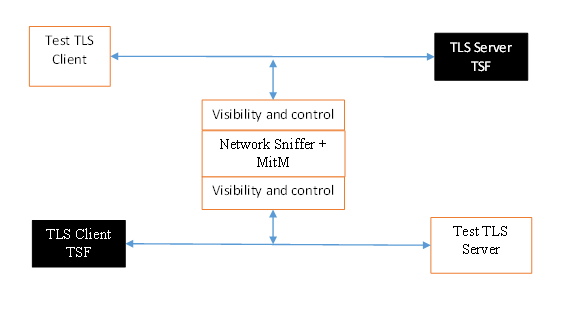

Functional Package for Transport Layer Security (TLS)
This page is best viewed with JavaScript enabled!
Version: 2.1 2025-03-05 National Information Assurance Partnership
Revision History
Version
Date
Comment
1.0
2018-12-17
First publication
1.1
2019-03-01
Clarifications regarding override for invalid certificates, renegotiation_info extension, DTLS versions, and named Diffie-Hellman groups in DTLS contexts
2.0
2022-12-19
Added audit events, added TLS/DTLS 1.3 support, deprecated TLS 1.0 and 1.1, updated algorithms/ciphersuites in accordance with CNSA suite RFC and to consider PSK, restructured SFRs for clarity
2.1
2025-03-05
Updated for CC:2022 conformance, incorporated applicable errata.
The following sections list Common Criteria and technology terms used in this document.
1.2.1 Common Criteria Terms
Assurance
Grounds for confidence that a TOE meets the SFRs [CC].
Base Protection Profile (Base-PP)
Protection Profile used as a basis to build a PP-Configuration.
Collaborative Protection Profile (cPP)
A Protection Profile developed by international technical communities and approved by multiple schemes.
Common Criteria (CC)
Common Criteria for Information Technology Security Evaluation (International Standard ISO/IEC 15408).
Common Criteria Testing Laboratory
Within the context of the Common Criteria Evaluation and Validation Scheme (CCEVS), an IT security evaluation facility accredited by the National Voluntary Laboratory Accreditation Program (NVLAP) and approved by the NIAP Validation Body to conduct Common Criteria-based evaluations.
Common Evaluation Methodology (CEM)
Common Evaluation Methodology for Information Technology Security Evaluation.
Distributed TOE
A TOE composed of multiple components operating as a logical whole.
Extended Package (EP)
A deprecated document form for collecting SFRs that implement a particular protocol, technology, or functionality. See Functional Packages.
Functional Package (FP)
A document that collects SFRs for a particular protocol, technology, or functionality.
Operational Environment (OE)
Hardware and software that are outside the TOE boundary that support the TOE functionality and security policy.
Protection Profile (PP)
An implementation-independent set of security requirements for a category of products.
An ST must claim exact conformance to this Functional Package.
The evaluation methods used for evaluating the TOE are a combination of the workunits defined in [CEM] as well as the Evaluation Activities for ensuring that individual SFRs and SARs have a sufficient level of supporting evidence in the Security Target and guidance documentation and have been sufficiently tested by the laboratory as part of completing ATE_IND.1. Any functional packages this PP claims similarly contain their own Evaluation Activities that are used in this same manner.
CC Conformance Claims
This Functional Package is conformant to Part 2 (extended) of Common Criteria CC:2022, Revision 1.
PP Claim
This Functional Package does not claim conformance to any Protection Profile.
There are no PPs or PP-Modules that are allowed in a PP-Configuration with this Functional Package.
Package Claim
This Functional Package is not conformant to any Functional or Assurance Packages.
Evaluation Methods
This Functional Package incorporates evaluation activies from the following Evaluation Methods documents:
Additional Information
3 Security Problem Definition
3.1 Threats
3.2 Assumptions
3.3 Organizational Security Policies
This document does not define any additional OSPs.
4 Security Objectives
4.1 Security Objectives for the Operational Environment
The evaluator shall examine the TSS to verify that the TLS and DTLS claims are consistent with those selected in the SFR (e.g., if FCS_TLS_EXT.1.1 claims "TLS as a client," the evaluator shall ensure that FCS_TLSC_EXT.1 is claimed as part of the TSF at minimum).
Guidance
There are no additional Guidance evaluation activities for this component.
Tests
There are no test activities for this SFR; the following information is provided as an overview of the expected functionality and test environment for all subsequent SFRs. Test Environment: Tests for TLS 1.2 and TLS 1.3 include examination of the handshake messages and behavior of the TSF when presented with unexpected or invalid messages. For TLS 1.2 and below, previous versions of this Functional Package only required visibility of network traffic and the ability to modify a valid handshake message sent to the TSF.
 Figure 2: Test environment for TLS 1.2 using network traffic visibility and control tools
TLS 1.3 introduces the encryption of handshake messages subsequent to the ServerHello exchange which prevents visibility and control using midpoint capabilities. To achieve equivalent validation of TLS 1.3 requires the ability to modify the traffic underlying the encryption applied after the ServerHello message. This can be achieved by introducing additional control of the messages sent, and visibility of messages received by the test TLS client, (when validating TLS server functionality) or the test server (when validating TLS client functionality).
Figure 3: Test environment for TLS 1.3 using custom endpoint capabilities for visibility and control
Typically, a compliant TLS 1.3 library modified to provide visibility and control of the handshake messages prior to encryption suffices for all tests. Such modification will require the test client, test server, or both to be validated. Since validations of products supporting only TLS 1.2 are still expected under this Package, the test environment for TLS 1.2-only validations may include network sniffers and man-in-the-middle products that do not require such modifications to a compliant TLS 1.2 library. For consistency, a compliant TLS client (or TLS server) together with the network sniffers and man-in-the-middle capabilities will also be referred to as a test TLS client (or test TLS server, respectively) in the following evaluation activities.
Figure 4: Combined test environment for TLS 1.2 and TLS 1.3 using both network tools and custom endpoint capabilities
< title="Security Assurance Requirements"/>
Appendix A - Optional Requirements
As indicated in the introduction to this Functional Package, the baseline requirements (those that must be performed by the TOE) are contained in the body of this Functional Package. This appendix contains three other types of optional requirements:
The first type, defined in Appendix A.1 Strictly Optional Requirements, are strictly optional requirements. If the TOE meets any of these requirements the vendor is encouraged to claim the associated SFRs in the ST, but doing so is not required in order to conform to this Functional Package.
The second type, defined in Appendix A.2 Objective Requirements, are objective requirements. These describe security functionality that is not yet widely available in commercial technology. Objective requirements are not currently mandated by this Functional Package, but will be mandated in the future. Adoption by vendors is encouraged, but claiming these SFRs is not required in order to conform to this Functional Package.
The third type, defined in Appendix A.3 Implementation-dependent Requirements, are Implementation-dependent requirements. If the TOE implements the product features associated with the listed SFRs, either the SFRs must be claimed or the product features must be disabled in the evaluated configuration.
A.1 Strictly Optional Requirements
This Functional Package does not define any Strictly Optional requirements.
A.2 Objective Requirements
This Functional Package does not define any Objective requirements.
A.3 Implementation-dependent Requirements
This Functional Package does not define any Implementation-dependent requirements.
Appendix B - Selection-based Requirements
As indicated in the introduction to this Functional Package, the baseline requirements (those that must be performed by the TOE or its underlying platform) are contained in the body of this Functional Package. There are additional requirements based on selections in the body of the Functional Package: if certain selections are made, then additional requirements below must be included.
B.1 Auditable Events for Selection-based Requirements
This document does not define any audit events for Selection-based Requirements.
B.2 Class: Cryptographic Support (FCS)
FCS_DTLSC_EXT.1 DTLS Client Protocol
The inclusion of this selection-based component depends upon selection in FCS_TLS_EXT.1.1.
The TSF shall implement[selection: DTLS 1.2 (RFC 6347), DTLS 1.3 (RFC 9147)]as a client that supports additional functionality for session renegotiation protection and[selection:
mutual authentication
supplemental downgrade protection
session resumption
no optional functionality
]and shall abort attempts by a server to negotiate all other DTLS versions.
Application Note: This SFR is claimed if "DTLS as a client" is selected in FCS_TLS_EXT.1.1. The ST author will claim supported DTLS versions and optional functionality as appropriate for the claimed versions. Session renegotiation protection is required for both DTLS 1.2 and DTLS 1.3, and the TSS must include the requirements from FCS_DTLSC_EXT.4. Within FCS_DTLSC_EXT.4, options for implementation of secure session renegotiation in DTLS 1.2 or rejecting renegotiation requests required in DTLS 1.3 and optionally supported in DTLS 1.2 are claimed. If "mutual authentication" is selected, then the TSS must additionally include the requirements from FCS_DTLSC_EXT.2. If the TOE implements DTLS with mutual authentication, this selection must be made. If "supplemental downgrade protection" is selected, then the TSS must additionally include the requirements from FCS_DTLSC_EXT.3. This is claimed when both DTLS 1.3 and DTLS 1.2 are supported and the client uses the method to reject downgrade. Note that TLS 1.1 or below downgrade protection in DTLS is used to notify a client that the server is capable of supporting DTLS 1.2 or DTLS 1.3, when it negotiates a DTLS 1.0 session because it received a ClientHello indicating maximum support for DTLS 1.0 (there is no DTLS version 1.1). Since this FP does not allow negotiation of DTLS 1.0, it is not necessary to claim such support. If "session resumption" is selected, then the TSS must additionally include the requirements from FCS_DTLSC_EXT.5. DTLS version numbers are denoted on the wire as the 1’s complement of the corresponding textual DTLS versions as described in RFC 6347, Section 4.1. DTLS version 1.2 is 0xfefd; DTLS version 1.3 is 0xfefc.
The TSF shall be able to support the following[selection:
TLS 1.2 ciphersuites:[selection:
TLS_ECDHE_ECDSA_WITH_AES_256_GCM_SHA384 as defined in RFC 5289 and RFC 8422
TLS_ECDHE_RSA_WITH_AES_256_GCM_SHA384 as defined in RFC 5289 and RFC 8422
TLS_RSA_WITH_AES_256_GCM_SHA384 as defined in RFC 5288
TLS_DHE_RSA_WITH_AES_256_GCM_SHA384 as defined in RFC 5288
TLS_ECDHE_ECDSA_WITH_AES_256_CBC_SHA384 as defined in RFC 5289
TLS_ECDHE_RSA_WITH_AES_256_CBC_SHA384 as defined in RFC 5289
ciphersuites using pre-shared secrets:[selection: TLS_ECDHE_PSK_WITH_AES_256_GCM_SHA384 as defined in RFC 8442, TLS_DHE_PSK_WITH_AES_256_GCM_SHA384 as defined in RFC 5487, TLS_RSA_PSK_WITH_AES_256_GCM_SHA384 as defined in RFC 5487]
]and shall not offer other TLS 1.2 ciphersuites,
TLS 1.3 ciphersuites:[selection: TLS_AES_256_GCM_SHA384 as defined in RFC 8446, [assignment: other TLS 1.3 ciphersuites] ]
]offering the supported ciphersuites in a ClientHello message in preference order:[assignment: list of supported ciphersuites].
Application Note: DTLS uses TLS ciphersuites. The ST author should select the ciphersuites that are supported, and must select at least one ciphersuite for each DTLS version supported – TLS 1.2 ciphersuites for DTLS 1.2 and TLS 1.3 ciphersuites for DTLS 1.3. Pre-shared secret ciphersuites for DTLS 1.2 are only claimed as required by a specific PP. While mandatory for RFC 8446, TLS_AES_128_GCM_SHA256 is deprecated by this SFR and should not be included in “other TLS 1.3 ciphersuites.” The ST author may list additional TLS 1.3 ciphersuites as they are registered. In addition to the supported ciphersuites, the ST author indicates the order of ciphersuites included in the ClientHello, indicating the preferred ciphersuites for server negotiation. To eliminate the need to produce duplicate lists, it is recommended to complete the selected list of ciphersuites in the order that they are presented and then complete the following assignment by saying that the presentation order is the same as in the previous list. If more than one ordering is possible (e.g., the order is constructed dynamically based on some property of the system on which the TOE is running) the ST uses the assignment to specify a dynamic ordering and the describes in the TSS the conditions for presenting the ordering. It is recommended, but not required, that the TLS 1.3 ciphersuites claimed are listed before TLS 1.2 ciphersuites, and that any other ciphersuites are listed last among the TLS 1.3 ciphersuites.
The TSF shall not offer ClientHello messages indicating the following: null encryption support for anonymous servers use of deprecated or export-grade cryptography including DES, 3DES, RC2, RC4, or IDEA for encryption use of MD-5 or SHA-1 for key derivation. and shall abort sessions where a server attempts to negotiate cryptographic options not enumerated in the ClientHello message.
Application Note: This element explicitly excludes ciphersuites defined for TLS 1.2 and previous TLS or SSL versions that might be included in the ClientHello from a TSF that supports DTLS 1.2 (as the only supported version, or as a fallback version for DTLS 1.3 clients negotiating with potential DTLS 1.2 servers). The requirement also constrains the choice of "other TLS 1.3 ciphersuites" when DTLS 1.3 is supported. In addition, this requirement prohibits Using Raw Public Keys in Transport Layer Security and Datagram Transport Layer Security (RFC 7250) for server certificates. Ciphersuites for TLS 1.2 are of the form TLS_(key exchange algorithm)_WITH_(encryption algorithm)_(message digest algorithm), and are listed in the TLS parameters section of the internet assignments at iana.org. This requirement constrains the value of (encryption algorithm) and (message digest algorithm). Ciphersuites for TLS 1.3 are of the form TLS_(AEAD)_(HASH), where (AEAD) is of the form (encryption algorithm)_(symmetric key length)_(mode) for an authenticated encryption with associated data specification (RFC 5116). This requirement constrains the value of the (encryption algorithm) component of (AEAD) and the value of (HASH).
The TSF shall be able to support the following TLS ClientHello message extensions: signature_algorithms extension (RFC 5246, RFC 8446) indicating support for[selection:
ecdsa-secp384r1_sha384 (RFC 8446)
rsa_pkcs1_sha384 (RFC 8446)
], and[selection:
rsa_pss_pss_sha384 (RFC 8603)
rsa_pss_rsae_sha384 (RFC 8603)
no other signature algorithms
] and [selection:
signature_algorithms_cert extension (RFC 8446) indicating support for[selection: ecdsa-secp384r1_sha384 (RFC 8446), rsa_pkcs1_sha384 (RFC 8446)], and[selection: rsa_pss_pss_sha384 (RFC 8603), rsa_pss_rsae_sha384 (RFC 8603), no other signature algorithms]
supported_versions extension (RFC 8446) indicating support for DTLS 1.3 and[selection: DTLS 1.2, no other versions]
post_handshake_auth (RFC 8446), pre_shared_key (RFC 8446), and psk_key_exchange_modes (RFC 8446) indicating psk_dhe_ke (DHE or ECDHE) mode
extended_master_secret extension (RFC 7627) enforcing server support, and[selection: allowing legacy servers, no other enforcement mode]
no other extensions
]and shall not send the following extensions: early_data psk_key_exchange_modes indicating PSK only mode.
Application Note: DTLS uses TLS extensions. Support for the signature_algorithms extension is optional in RFC 5246 but is mandated for this functional package. Support for the signature_algorithms extension is mandatory in RFC 8446 and remains so in this functional package. Whether the TOE's implementation conforms to RFC 5246, RFC 8446, or both is dependent on whether the TOE supports DTLS 1.2, DTLS 1.3, or both. If DTLS 1.3 is claimed in FCS_DTLSC_EXT.1.1, supported_versions, supported_groups, and key_share extensions are claimed in accordance with RFC 8446. If DTLS 1.3 is not claimed, supported_versions and key_share extensions are not claimed. If DTLS 1.2 is claimed, extended_master_secret extension is claimed, with the ability to enforce server support, and optionally, the ability to support legacy servers. If DTLS 1.2 is supported and if ECDHE or DHE ciphersuites are claimed in FCS_DTLSC_EXT.1.2, the supported_groups extension is claimed here with appropriate secp and ffdhe groups claimed. For compatibility purposes, DTLS clients may offer additional supported_groups values beyond what is specified in the selection. Other extensions may be supported; certain extensions and values may need to be claimed for SFRs defined outside of this package related to the calling applications.
verify that a presented identifier of name type:[selection: dNSName according to RFC 6125, uniformResourceIdentifier according to RFC 6125, SRVname according to RFC 6125, Common Name conversion to dNSName according to RFC 5280 and RFC 6125, directoryName according to RFC 5280, iPAddress according to RFC 5280, rfc822Name according to RFC 5280, according to]
interface with a supported function requesting the DTLS channel to verify that a presented identifier
pass initial name constraints to the certification path processing function to verify, in accordance with FIA_X509_EXT.1, that the presented identifier
]matches a reference identifier for the requested DTLS server and shall abort the session if no match is found.
Application Note: The ST author claims the supported options for verifying that the server is associated with an expected reference identifier. The first option is claimed if the TSF implements name matching. The option “interface with a supported function…” is claimed if the validated certification path, names extracted from the subject field and/or subject alternate name extension of a leaf certificate of a validated certification path, or normalized representations of names extracted from the leaf certificate are passed to a supported function for matching. The option “pass initial name constraints…” is claimed if the TSF formulates initial name constraints from the reference identifiers used by the certification path processing function. The final option is claimed if TLS 1.2 is supported and PSK ciphersuites are supported, and is used to associate the shared PSK with a known identifier. If the TSF matches names, the rules for verification of identity are described in RFC 6125, Section 6 and RFC 5280, Section 7. If "Common name conversion..." is claimed, both the subject field and the converted common name are matched. The reference identifier is established by the user (e.g., entering a URL into a web browser or clicking a link), by configuration (e.g., configuring the name of a mail or authentication server), or by an application (e.g., a parameter of an API) depending on the supported function. The client establishes all acceptable reference identifiers for matching against the presented identifiers as validated in the server’s certificate. If the TSF performs matching of the reference identifiers to the identifiers provided in the server’s certificate, the first option is claimed and all supported name types are claimed. If the TSF presents the certificate, or the presented identifiers from the certificate to the supported function, the second option is claimed. If the TSF constructs initial name constraints derived from the reference identifiers for validation during certification path validation, the third option is claimed. In most cases where DTLS servers are represented by DNS-type names, the preferred method for verification is the Subject Alternative Name using DNS, URI, or Service Names. Verification using a conversion of the Common Name relative distinguished name from a DNS name type in the subject field is allowed for the purposes of backward compatibility. The client should avoid constructing reference identifiers using wildcards. However, if the presented identifiers include wildcards, the client must follow the best practices regarding matching; these best practices are captured in the evaluation activity. If the TSF supports wildcards and allows names with DNS portions containing internationalized names, the internationalized name should not match any wildcard, in accordance with RFC 6125 section 7.2. Support for other name types is rare, but may be claimed for specific applications. If specified, the assignment includes both the RFC describing normalization and matching rules and any refinements necessary to resolve options available in the RFC.
The TSF shall not establish a trusted channel if the server certificate is invalid[selection: with no DTLS-specific exceptions, except when override is authorized in accordance with[assignment: override rules]in the case where valid revocation information is not available] .
Application Note: The option “except when…” is claimed if DTLS specific exception rules are implemented to allow server certificates with no valid revocation status information to be accepted. This is claimed only when FIA_X509_EXT.2.2 includes the option “supported function determines acceptance via…”. The assignment for when override is authorized describes the DTLS-specific processing to include the privileged users authorized to configure an override, and the duration of an override. It is preferred that overrides are minimized in scope and time. Otherwise, “with no DTLS-specific exceptions” is claimed. Note that FIA_X509_EXT.1 may allow methods other than CRL or OCSP to validate the revocation status of a certificate. A certificate that exclusively uses these alternate methods may not advertise revocation status information locations. Thus, a certificate that is valid according to FIA_X509_EXT.1 and does not advertise revocation status information in a CRL_DP or AIA extension is considered to be not revoked. DTLS-specific override mechanisms are for use with certificates with published revocation status information that is not accessible, whether temporarily or because the information cannot be accessed during the state of the TOE (e.g., for verifying signatures on boot code). The circumstances should be described by the ST author, who should indicate the override mechanism and conditions that apply to the override, including system state, user or admin actions, etc.
The TSF shall[selection: terminate the DTLS session, silently discard the record]if a message received contains an invalid MAC or if decryption fails in the case of GCM and other AEAD ciphersuites.
Application Note: All supported responses are claimed; at least one option is claimed.
The evaluator shall check the description of the implementation of this protocol in the TSS to ensure the supported DTLS versions, features, ciphersuites, and extensions are specified in accordance with RFC 6347 (DTLS 1.2) and RFC 9147 (DTLS 1.3 and updates to DTLS 1.2) and as refined in FCS_DTLSC_EXT.1 as appropriate.The evaluator shall verify that ciphersuites indicated in FCS_DTLSC_EXT.1.2 are included in the description, and that none of the following ciphersuites are supported: ciphersuites indicating NULL, RC2, RC4, DES, IDEA, TDES, or AES-128 in the encryption algorithm component, indicating 'anon,' or indicating MD5 or SHA in the message digest algorithm component.The evaluator shall verify that the DTLS implementation description includes the extensions as required in FCS_DTLSC_EXT.1.4.The evaluator shall verify that the TSS describes applications that use the DTLS functions and how they establish reference identifiers.If name matching is supported, the evaluator shall verify that the TSS includes a description of matching methods used for each supported name type to the supported application defined reference identifiers. The evaluator shall verify that the TSS includes a description of wildcards recognized for each name type claimed in FCS_DTLSC_EXT.1.5, if any, and shall verify that the matching rules meet or exceed best practices. In particular, the evaluator shall ensure that the matching rules are as restrictive as, or more restrictive than the following: DNS names: The ‘*’ character used in the complete leftmost label of a DNS name represents any valid name that has the same number of labels, and that matches all remaining labels. The ‘*’ character must only be used in the leftmost complete label of a properly formatted DNS name. The ‘*’ must not be used to represent a public suffix, or in the leftmost label immediately following a public suffix. URI or SRV names: The ‘*’ character can only occur in the domain name portion of the name represented as a DNS name. All restrictions for wildcards in DNS names apply to the DNS portion of the name. URI host names presented as an IP address are matched according to IP address matching rules – see best practices for IP addresses below. In accordance with RFC 6125, it is preferred that such URIs are presented a matching name of type IP address in the SAN. IP addresses: RFC 5280 does not support IP address ranges as presented names, but indicates that presented names may be compared to IP address ranges present in name constraints. If the TSF supports IP address ranges as reference identifiers, the reference identifier matches if the presented name is in the range. IP ranges in name constraints (including reference identifiers) should be presented in CIDR format. RFC 2822 names: RFC 5280 and updates RFC 8398 and RFC 8399 do not support special indicators representing more that a a single mailbox as a presented name, but indicates that presented names may be compared to a single mailbox, ‘any’ email address at a host, or ‘any’ email address on a domain (e.g., “example.com” matches any email address on the host example.com and “.example.com” matches any email address in the domain example.com, but does not match email addresses at the host “example.com”). Such matching is prohibited for internationalized RFC 2822 names. Embedded CN name types: The CN relative distinguished name of a DNS name type included in the subject field is not strongly typed. Attempts to match both the name type and wildcard specifications can result in matches not intended, and therefore, not authoritatively asserted by a certification authority. It is preferred that no matching of CN embedded names be supported, but if necessary for backward compatibility, the description should clearly indicate how different name types are interpreted in the matching algorithm. If an embedded CN is present, the DN structure containing the CN as an RDN is matched, and the CN component is further matched according to the specific rules for the implied name type. In particular, the ‘*’ character in a CN is not to be interpreted as representing more than a single entity unless the entirety of the RDN is properly formatted as a DNS, URI, or SVR name, and represents a wildcard meeting best practices as described above. If name types are passed to the supported functions, the evaluator shall verify that for each claimed supported function, the TSS includes a description of the information used to validate the identifier that is passed to that function.If name constraints are passed to the certificate verification function, the evaluator shall verify that the TSS describes the initial allow and deny tables for each reference identity reference name supported.The evaluator shall verify that the TSS describes how the DTLS client IP address is validated prior to issuing a ServerHello message.If override rules are claimed in FCS_DTLSC_EXT.1.6, the evaluator shall confirm that the TSS identifies the subjects authorized to configure the override as well as the scope or duration of any overrides.The evaluator shall verify that the TSS describes the actions that take place if a message received from the DTLS server fails the integrity check. If both selections are chosen in FCS_DTLSC_EXT.1.7, the evaluator shall verify that the TSS describes when each method is used and whether the behavior is configurable.
Guidance
The evaluator shall check the operational guidance to ensure that it contains instructions on configuring the product so that DTLS conforms to the description in the TSS and that it includes any instructions on configuring the version, ciphersuites, or optional extensions that are supported. The evaluator shall verify that all configurable features for matching identifiers in certificates presented in the DTLS handshake to application specific reference identifiers are described. If override rules are claimed in FCS_DTLSC_EXT.1.6, the evaluator shall verify the operational guidance has instructions for applying them. If the TSS indicates the behavior of the TSF on receiving a message from the DTLS server that fails the MAC integrity check is configurable, the evaluator shall verify that the guidance documentation describes instructions for configuring the behavior.
Tests
The evaluator shall perform the following tests.
Test FCS_DTLSC_EXT.1:1: (supported configurations) For each supported version, and for each supported ciphersuite associated with the version:The evaluator shall establish a DTLS connection between the TOE and a test DTLS server that is configured to negotiate the tested version and ciphersuite in accordance with the RFC for the version.The evaluator shall observe that the TSF presents a ClientHello indicating DTLS 1.2 (value 'fe fd') in the highest or legacy version field and, if DTLS 1.3 is supported, the "supported versions" extension is present and contains the value 'fe fc' for DTLS 1.3The evaluator shall observe that the ClientHello indicates the supported ciphersuites in the order indicated, and that it includes only the extensions supported, with appropriate values, for that version in accordance with the requirement.The evaluator shall observe that the TOE successfully completes the DTLS handshake.Note:The highest version field is renamed to the legacy version field for DTLS 1.3. Regardless of the versions supported, this field is required to indicate DTLS 1.2. If the TOE supports both DTLS 1.2 and DTLS 1.3, the ClientHello should indicate all ciphersuites and all extensions as required for either version. In particular, the supported versions extension is required and must include the DTLS 1.3 value ('fe fc') and may also include the DTLS 1.2 indicator ('fe fd').If the TOE is configurable to support only DTLS 1.2, only DTLS 1.3, or both DTLS 1.2 and DTLS 1.3, should be performed in each configuration, with ciphersuites and extensions appropriate for the configured version.The connection in may be established as part of the establishment of a higher-level protocol, (e.g., as part of an EAP session).It is sufficient to observe the successful negotiation of a ciphersuite to satisfy the intent of the test; it is not necessary to examine the characteristics of the encrypted traffic in an attempt to discern the ciphersuite being used (for example, that the cryptographic algorithm is 128-bit AES and not 256-bit AES).
Test FCS_DTLSC_EXT.1:2: (obsolete versions) The evaluator shall perform the following tests:
Test FCS_DTLSC_EXT.1:3: (ciphersuites) The evaluator shall perform the following tests on handling unexpected ciphersuites using a test DTLS server sending handshake messages compliant with the negotiated version except as indicated in the test:
Test FCS_DTLSC_EXT.1:4: (extensions) For each supported version indicated in the following tests, the evaluator shall establish a connection from the TOE with a test server negotiating the tested version and providing server handshake messages as indicated when performing the following tests for validating proper extension handling:
Test FCS_DTLSC_EXT.1:5: (DTLS 1.3 extensions) [conditional] If the TSF supports DTLS 1.3, the evaluator shall perform the following tests. For each test, the evaluator shall observe that the TSF’s ClientHello includes the supported versions extension with the value 'fe fc' indicating DTLS 1.3:
Test FCS_DTLSC_EXT.1:6: (corrupt finished message) For each supported version, the evaluator shall initiate a DTLS session from the TOE to a test DTLS server that sends a compliant set of server handshake messages, except for sending a modified finished message (modify a byte of the finished message that would have been sent by a compliant server). The evaluator shall observe that the TSF silently drops the message or terminates the session and in either case, does not complete the handshake by observing that the TSF does not send application data provided to the DTLS channel.
Test FCS_DTLSC_EXT.1:7: (missing finished message) For each supported version, the evaluator shall initiate a session from the TOE to a test DTLS server providing a compliant handshake, except for sending a random DTLS message (the five byte header indicates a correct DTLS message for the negotiated version, but not indicating a finished message) as the final message. The evaluator shall observe that the TSF silently drops the message or terminates the session and in either case, does not send application data.Note:If the TSF terminates the session, the test is successful. If the TSF silently drops the message, the evaluator shall continue sending the server finished until the TSF times out. It is preferred that the TSF logs a fatal error alert message (e.g., decryption error) in response to this, but it is acceptable that the TSF terminates the connection silently (i.e., without logging a fatal error alert).For DTLS 1.2, the modified message is sent after the change_cipher_spec message. For DTLS 1.3, the modified message is sent as the last message of the server’s second flight of messages.
Test FCS_DTLSC_EXT.1:8: (unexpected/corrupt signatures within handshake) The evaluator shall perform the following tests, according to the versions supported.
Test FCS_DTLSC_EXT.1:9: [conditional] If the TSF supports certificate-based server authentication, then for each supported version, the evaluator shall initiate a DTLS session from the TOE to the compliant test DTLS server configured to negotiate the tested version, and to authenticate using a certificate trusted by the TSF as specified in the following:
Test FCS_DTLSC_EXT.1:10: For each version supported, the evaluator shall establish a connection using a compliant handshake negotiating the version. The evaluator shall then cause the test server to send application data with at least one byte in a record message modified from what a compliant test server would send, and verify that the client discards the record or terminates the DTLS session as described in the TSS. If multiple behaviors are supported, the evaluator shall repeat the test for each behavior.
FCS_DTLSC_EXT.2 DTLS Client Support for Mutual Authentication
The inclusion of this selection-based component depends upon selection in FCS_DTLSC_EXT.1.1.
The TSF shall support mutual DTLS authentication using X.509v3 certificates during the handshake and[selection: in support of post-handshake authentication requests, at no other time], in accordance with[selection: RFC 5246, Section 7.4.4, RFC 8446, Section 4.3.2] .
Application Note: This SFR is claimed if "mutual authentication" is selected in FCS_DTLSC_EXT.1.1. Clients that support DTLS 1.3 and post-handshake authentication should claim "in support of post-handshake authentication requests" in the first selection. The "at no other time" selection is claimed for clients only supporting DTLS 1.2 or for DTLS 1.3 clients that do not support post-handshake authentication. The certificate request message sent by the server specifies the signature algorithms and certification authorities supported by the server. If the client does not possess a matching certificate, it sends an empty certificate message. The structure of the certificate request message is changed in TLS 1.3 to use the signature_algorithm, signature_algorithms_cert (optional), and certificate_authorities extensions, and RFC 8446 allows for (D)TLS 1.2 implementations to use the new message structure. The "RFC 8446, section 4.3.2" option is claimed in the second selection if DTLS 1.3 is supported or if DTLS 1.2 is supported and the RFC 8446 method is supported for DTLS 1.2 servers. The "RFC 5246, section 7.4.4" option is claimed if DTLS 1.2 is supported and the RFC 5246 method is supported for interoperability with DTLS 1.2 servers that do not adopt the RFC 8446 method. When mutual authentication is supported, at least one of these methods must be claimed, per the selection.
The evaluator shall ensure that the TSS description required perincludes the use of client-side certificates for DTLS mutual authentication. The evaluator shall also ensure that the TSS describes any factors beyond configuration that are necessary in order for the client to engage in mutual authentication using X.509v3 certificates.
Guidance
The evaluator shall ensure that the operational guidance includes any instructions necessary to configure the TOE to perform mutual authentication. The evaluator shall also verify that the operational guidance required perincludes instructions for configuring the client-side certificates for DTLS mutual authentication.
Tests
For each supported DTLS version, the evaluator shall perform the following tests:
Test FCS_DTLSC_EXT.2:1: The evaluator shall establish a DTLS connection from the TSF to a test DTLS server that negotiates the tested version and which is not configured for mutual authentication (i.e., does not send a Server’s Certificate Request (type 13) message). The evaluator shall observe negotiation of a DTLS channel and confirm that the TOE did not send a Client’s Certificate message (type 11) during handshake.
Test FCS_DTLSC_EXT.2:2: The evaluator shall establish a connection to a test DTLS server with a shared trusted root that is configured for mutual authentication (i.e., it sends a Server’s Certificate Request (type 13) message). The evaluator shall observe negotiation of a DTLS channel and confirm that the TOE responds with a non-empty Client’s Certificate message (type 11) and Certificate Verify (type 15) message.
Test FCS_DTLSC_EXT.2:3: [conditional] If the TSF supports post-handshake authentication, the evaluator shall establish a pre-shared key between the TSF and a test DTLS 1.3 server. The evaluator shall initiate a DTLS session using the pre-shared key and confirm the TSF and test DTLS 1.3 server successfully complete the DTLS handshake and both support post-handshake authentication. After the session is successfully established, the evaluator shall initiate a certificate request message from the test DTLS 1.3 server. The evaluator shall observe that the TSF receives that authentication request and shall take necessary actions, in accordance with the operational guidance, to complete the authentication request. The evaluator shall confirm that the test DTLS 1.3 server receives certificate and certificate verification messages from the TSF over the channel that authenticates the client. Note:DTLS 1.3 certificate requests from the test server and client certificate and certificate verify messages are encrypted. The evaluator shall confirm that the TSF sends the appropriate messages by examining the messages received at the test DTLS 1.3 server and by inspecting any relevant server logs. The evaluator may also take advantage of the calling application to demonstrate that the TOE receives data configured at the test DTLS server.
FCS_DTLSC_EXT.3 DTLS Client Downgrade Protection
The inclusion of this selection-based component depends upon selection in FCS_DTLSC_EXT.1.1.
The TSF shall not establish a DTLS channel if the ServerHello message includes a[selection: TLS 1.2 downgrade indicator, TLS 1.1 or below downgrade indicator]in the server random field.
Application Note: This SFR is claimed if "supplemental downgrade protection" is selected in FCS_DTLSC_EXT.1.1. DTLS uses the TLS downgrade indicators. The ST author claims the “TLS 1.2 downgrade indicator” when FCS_DTLSC_EXT.1 indicates support for both TLS 1.2 and TLS 1.3 and implements supplemental downgrade protection. This option is not claimed if DTLS 1.3 is not supported. The “TLS 1.1 or below downgrade indicator” option may also be claimed if supported, but should only be claimed if the TSF is capable of detecting the indicator. This package requires the TSF to always terminate DTLS 1.0 sessions based on the ServerHello negotiated version field; it is acceptable to ignore any downgrade indicator. However, a TSF that is capable of detecting the TLS 1.1 or below downgrade indicator may claim this option if it takes different actions depending on whether the TLS 1.1 or below downgrade indicator is set.
The evaluator shall review the TSS and confirm that the description of the DTLS client protocol includes the downgrade protection mechanism in accordance with RFC 9147 and identifies any configurable features of the TSF needed to meet the requirements. If the TSS claims that the TLS 1.1 and below indicator is processed in the DTLS 1.2 implementation to prevent downgrade to DTLS 1.0, the evaluator shall confirm that the TSS indicates which configurations allow processing of the downgrade indicator and the specific response of the TSF when it receives the downgrade indicator as opposed to simply terminating the session for the unsupported version.
Guidance
The evaluator shall review the operational guidance and confirm that any instructions to configure the TSF to meet the requirements are included.
Tests
The evaluator shall perform the following tests to confirm the response to downgrade indicators from a test DTLS 1.3 server:
Test FCS_DTLSC_EXT.3:1: [conditional] If the TSF supports DTLS 1.3, the evaluator shall initiate a DTLS 1.3 session with a test DTLS 1.3 server configured to send a compliant DTLS 1.2 ServerHello (not including any DTLS 1.3 extensions) but including the DTLS 1.2 downgrade indicator ‘44 4F 57 4E 47 52 44 01’ in the last eight bytes of the server random field. The evaluator shall confirm that the TSF silently drops the ServerHello message or terminates the session.Note:If the TSF terminates the session, the test is successful. If the TSF silently drops the message, the evaluator shall continue sending the server message until the TSF times out. It is preferred that the TSF logs a fatal error alert message (e.g., illegal parameter), but it is acceptable that the TSF terminate the session without logging an error alert.
Test FCS_DTLSC_EXT.3:2: [conditional] If the TSF supports the TLS 1.1 or below downgrade indicator to prevent downgrade to DTLS 1.0, and if the ST indicates a configuration where the indicator is processed, the evaluator shall follow operational guidance instructions to configure the TSF so it parses a DTLS 1.1 ServerHello message to detect and process the TLS downgrade indicator. The evaluator shall initiate a DTLS session between the TOE and a test DTLS server that is configured to send a DTLS 1.0 ServerHello message with the downgrade indicator ‘44 4F 57 4E 47 52 44 00’ in the last eight bytes of the server random field, but which is otherwise compliant with RFC 4347. The evaluator shall observe that the TSF silently drops the ServerHello message or terminates the session as described in the ST.Note:The TSF is required not to accept a negotiation of DTLS 1.0. This test confirms the TSF is able to distinguish attempts to negotiate DTLS 1.0 when the TLS 1.1 and below downgrade indicator is provided, and is only performed when the indicator is processed resulting in a different behavior than other attempts to negotiate DTLS 1.0. If the TSF terminates the session according to the unique behavior indicated in the ST, the test is successful. If the TSF silently drops the message, the evaluator shall continue sending the server finished until the TSF demonstrates the unique response to the downgrade indicator as described in the ST. It is preferred that the TSF logs a fatal error alert message (illegal parameter or unsupported version), but it is acceptable that the TSF terminate the session without logging an error alert.Use of the TLS 1.1 and below indicator as a redundant mechanism where there is no configuration that actually processes the value does not require additional testing, since this would be addressed by for FCS_DTLSC_EXT.1.1. This test is only required if the TSF responds differently (e.g., a different error alert) when the downgrade indicator is present than when DTLS 1.0 or below is negotiated and the downgrade indicator is not present.
FCS_DTLSC_EXT.4 DTLS Client Support for Renegotiation
The inclusion of this selection-based component depends upon selection in FCS_TLS_EXT.1.1.
The TSF shall support secure DTLS renegotiation through use of[selection: the “renegotiation_info” TLS extension in accordance with RFC 5746, the TLS_EMPTY_RENEGOTIATION_INFO_SCSV signaling ciphersuite signaling value in accordance with RFC 5746, rejection of all renegotiation attempts]and shall[selection: terminate the session, discard the message]if an unexpected ServerHello is received or[selection: hello request message is received, in no other case] .
Application Note: This SFR is claimed if "DTLS as a client" is selected in FCS_TLS_EXT.1.1. A client supporting DTLS 1.3 must claim “rejection of all renegotiation attempts.” This option may also be claimed as a method for TLS 1.2 renegotiation protection. The TLS_EMPTY_RENEGOTIATION_INFO_SCSV is the preferred mechanism for DTLS 1.2 protection against insecure renegotiation when the client does not renegotiate. The ST author will claim "a hello request message is received" in the second selection to indicate support for this mechanism. RFC 5746 allows the client to accept connections with servers that do not support the extension; this FP refines RFC 5746 and requires the client to terminate sessions with such servers. Thus, unexpected ServerHello messages includean initial ServerHello negotiating DTLS 1.2 that does not contain a renegotiation_info extensionan initial ServerHello negotiating DTLS 1.2 that has a renegotiation_info extension that is non-emptya subsequent ServerHello renegotiating DTLS 1.2 that does not contain a renegotiation_info extensiona subsequent ServerHello negotiating DTLS 1.2 that has a renegotiation_info extension with an incorrect renegotiated_connection valueanda ServerHello request message when renegotiation is not allowed (for DTLS 1.3 or when the option is claimed for TLS 1.2). DTLS 1.3 provides protection against insecure renegotiation by not allowing renegotiation. If DTLS 1.3 is claimed in FCS_DTLSC_EXT.1.1, the client receives a ServerHello that attempts to negotiate DTLS 1.3, and the ServerHello also contains a non-empty renegotiation_info extension; the client will terminate the connection or silently discard the message.
The evaluator shall examine the TSS to ensure that DTLS renegotiation protections are described in accordance with the requirements. The evaluator shall ensure that any configurable features of the renegotiation protections are identified.
Guidance
The evaluator shall examine the operational guidance to confirm that instructions for any configurable features of the renegotiation protection mechanisms are included.
Tests
is required.
Test FCS_DTLSC_EXT.4:1: [conditional] If the TSF supports DTLS 1.2 and supports a configuration to accept renegotiation requests for DTLS 1.2, the evaluator shall follow any operational guidance to configure the TSF. The evaluator shall perform the following tests:
Test FCS_DTLSC_EXT.4:2: [conditional] if the TSF supports a configuration that prevents renegotiation, the evaluator shall perform the following tests:
FCS_DTLSC_EXT.5 DTLS Client Support for Session Resumption
The inclusion of this selection-based component depends upon selection in FCS_DTLSC_EXT.1.1.
The TSF shall support session resumption as a DTLS client via the use of[selection: session ID in accordance with RFC 5246, tickets in accordance with RFC 5077, PSK and tickets in accordance with RFC 8446] .
Application Note: This SFR is claimed if "session resumption" is selected in FCS_DTLSC_EXT.1.1. The ST author indicates which session resumption mechanisms are supported. One or both of the first two options, "session ID in accordance with RFC 5246" and "tickets in accordance with RFC 5077" are claimed if resumption of DTLS 1.2 sessions is supported. If resumption of DTLS 1.3 sessions is supported, "PSK and tickets in accordance with RFC 8446" is selected, and the selection-based SFRFCS_DTLSC_EXT.6 must also be claimed. While it is possible to perform session resumption using PSK ciphersuites in DTLS 1.2, this is uncommon. Validation of key exchange and session negotiation rules for PSK ciphersuites is independent of the source of the pre-shared key and is covered in FCS_DTLSC_EXT.1.
The evaluator shall examine the TSS and confirm that the DTLS client protocol description includes a description of the supported resumption mechanisms.
Guidance
The evaluator shall ensure the operational guidance describes instructions for any configurable features of the resumption mechanism.
Tests
The evaluator shall perform the following tests:
Test FCS_DTLSC_EXT.5:1: For each supported DTLS version and for each supported resumption mechanism that is supported for that version, the evaluator shall establish a new DTLS session between the TSF and a compliant test DTLS server that is configured to negotiate the indicated version and perform resumption using the indicated mechanism. The evaluator shall confirm that the TSF completes the initial DTLS handshake and shall cause the TSF to close the session normally. The evaluator shall then cause the TSF to resume the session with the test DTLS server using the indicated method and observe that the TSF successfully establishes the session.Note:For each method, successful establishment refers to proper use of the mechanism, to include compliant extensions and behavior, as indicated in the referenced RFC.
Test FCS_DTLSC_EXT.5:2: (TLS 1.3 session id echo) [conditional] If the TSF supports DTLS 1.3, the evaluator shall initiate a new DTLS 1.3 session with a test TLS server. The evaluator shall cause the test DTLS server to send a DTLS 1.3 ServerHello message (or a hello retry request if the TSF does not include the key share extension) that contains a different value in the legacy_session_id field from the expected 32-byte value, and observe that the TSF silently drops the ServerHello message or terminates the session.Note:If the TSF terminates the session, the test is successful. If the TSF silently drops the message, the evaluator shall continue sending the ServerHello message until the TSF times out. It is preferred that the TSF logs a fatal error alert message (e.g., illegal parameter) in response to this, but it is acceptable that the TSF terminates the connection silently (i.e., without logging a fatal error alert).
The TSF shall not send early data in DTLS 1.3 sessions.
Application Note: This SFR is claimed if "PSK and tickets in accordance with RFC 8446" is selected in FCS_DTLSC_EXT.5.1. This SFR is claimed when session resumption is supported for DTLS 1.3. RFC 8446 allows pre-shared keys to be used directly and also allows early data to be protected using only the pre-shared key. This SFR refines the RFC to use PSK only with a supplemental DHE or ECDHE key exchange to ensure perfect forward secrecy for all sessions.
The evaluator shall examine the TSS to verify that the TLS client protocol description indicates that the PSK exchange requires DHE or ECDHE mode and prohibits sending early data. The evaluator shall examine the TSS to verify it lists all applications that can be secured by TLS 1.3 using pre-shared keys and describes how each TLS 1.3 client application ensures data for the application is not sent using early data.
Guidance
The evaluator shall examine the operational guidance to verify that instructions for any configurable features that are required to meet the requirement are included. The evaluator shall ensure the operational guidance includes any instructions required to configure applications so the DTLS 1.3 client implementation does not send early data.
Tests
[conditional] For each application that is able to be secured via DTLS 1.3 using PSK, the evaluator shall follow operational guidance to configure the application not to send early data. The evaluator shall cause the application to initiate a resumed DTLS 1.3 session between the TSF and a compliant test DTLS 1.3 server as in in FCS_DTLSC_EXT.5. The evaluator shall observe that the TSF ClientHello for DTLS 1.3 includes the psk_mode extension with the value psk_dhe_ke and sends a key share value for a supported group. The evaluator shall confirm that early data is not received by the test TLS server.Note:If no applications supported by the TOE provide data to DTLS 1.3 that can be sent using PSK, this test is omitted.
FCS_DTLSS_EXT.1 DTLS Server Protocol
The inclusion of this selection-based component depends upon selection in FCS_TLS_EXT.1.1.
The TSF shall implement[selection: DTLS 1.2 (RFC 6347), DTLS 1.3 (RFC 9147)]as a server that supports additional functionality for session renegotiation protection and[selection:
mutual authentication
supplemental downgrade protection
session resumption
no optional functionality
]and shall reject connection attempts from clients supporting only DTLS 1.0.
Application Note: This SFR is claimed if "DTLS as a server" is selected in FCS_TLS_EXT.1.1. The ST author will claim supported DTLS versions and optional functionality as appropriate for the claimed versions. Session renegotiation protection is required for both DTLS 1.2 and DTLS 1.3, and the ST must include the requirements from FCS_DTLSS_EXT.4. Within FCS_DTLSS_EXT.4, options for implementation of secure session renegotiation in DTLS 1.2, or rejecting renegotiation requests required in DTLS 1.3 and optionally supported in DTLS 1.2 are claimed. If "mutual authentication" is selected, then the ST must additionally include the requirements from FCS_DTLSS_EXT.2. If the TOE implements DTLS with mutual authentication, this selection must be made. Supplemental downgrade protection is claimed if both DTLS 1.2 and DTLS 1.3 are supported. If "supplemental downgrade protection" is selected, then the ST must additionally include the requirements from FCS_DTLSS_EXT.3. If "session resumption" is selected, then the ST must additionally include the requirements from FCS_DTLSS_EXT.5. DTLS version numbers are denoted on the wire as the 1’s complement of the corresponding textual DTLS versions as described in RFC 6347, Section 4.1. DTLS version 1.2 is 0xfefd; DTLS version 1.3 is 0xfefc.
The TSF shall be able to support the following[selection:
TLS 1.2 ciphersuites:[selection:
TLS_ECDHE_ECDSA_WITH_AES_256_GCM_SHA384 as defined in RFC 5289 and RFC 8422
TLS_ECDHE_RSA_WITH_AES_256_GCM_SHA384 as defined in RFC 5289 and RFC 8422
TLS_RSA_WITH_AES_256_GCM_SHA384 as defined in RFC 5288
TLS_DHE_RSA_WITH_AES_256_GCM_SHA384 as defined in RFC 5288
TLS_ECDHE_ECDSA_WITH_AES_256_CBC_SHA384 as defined in RFC 5289
TLS_ECDHE_RSA_WITH_AES_256_CBC_SHA384 as defined in RFC 5289
ciphersuites using pre-shared secrets:[selection: TLS_ECDHE_PSK_WITH_AES_256_GCM_SHA384 as defined in RFC 8442, TLS_DHE_PSK_WITH_AES_256_GCM_SHA384 as defined in RFC 5487, TLS_RSA_PSK_WITH_AES_256_GCM_SHA384 as defined in RFC 5487]
]
TLS 1.3 ciphersuites:[selection: TLS_AES_256_GCM_SHA384 as defined in RFC 8446, [assignment: other TLS 1.3 ciphersuites] ]
]using a preference order based on[selection: RFC 9151 priority, ClientHello ordering, [assignment: additional priority] ] .
Application Note: DTLS supports TLS ciphersuites. The ST author selects the ciphersuites that are supported and must select at least one ciphersuite suitable for each supported DTLS version – TLS 1.2 ciphersuites for DTLS 1.2 and TLS 1.3 ciphersuites for DTLS 1.3. It is necessary to limit the ciphersuites that can be used administratively in an evaluated configuration on the server in the test environment. If administrative steps need to be taken so that the ciphersuites negotiated by the implementation are limited to those in this requirement, then the appropriate instructions need to be contained in the guidance. While indicated as mandatory in RFC 8446, the ciphersuite TLS_AES_128_GCM_SHA256 is deprecated by this SFR and should not be included in “other TLS 1.3 ciphersuites.” The ST author may list additional TLS 1.3 ciphersuites as they are registered. The final selection indicates the TOE’s preference for negotiating a ciphersuite. RFC 9151 indicates the required ciphersuites for NSS systems and "RFC 9151 priority" is claimed if those ciphersuites are selected whenever offered by the client. The "ClientHello ordering" option is claimed if client priority is considered; if both are claimed, the ST author should indicate which is primary and which is secondary, and whether the priority scheme is configurable. If other priority schemes or tertiary priority is used, the ST author will claim the third option and describe the scheme in the ST.
The TSF shall not establish a connection with a client that does not indicate support for at least one of the supported cryptographic parameter sets.
Application Note: DTLS uses TLS cryptographic parameters. In DTLS 1.2 handshakes, the cryptographic parameters are determined by the TLS 1.2 ciphersuite components passed in the ClientHello. In DTLS 1.3, the cryptographic parameters are determined by the ciphersuite components and the supported group extension. When both DTLS 1.2 and DTLS 1.3 are supported, cryptographic parameters are determined by the highest version supported by the client. Ciphersuites for TLS 1.2 are of the form TLS_(key exchange algorithm)_WITH_(encryption algorithm)_(message digest algorithm) and are listed in the TLS parameters section of the internet assignments at iana.org. Ciphersuites for TLS 1.3 are of the form TLS_(AEAD)_(HASH), where (AEAD) is of the form (encryption algorithm)_(symmetric key length)_(mode) for an authenticated encryption with associated data specification (RFC 5116).
The TSF shall be able to process the following TLS ClientHello message extensions: signature_algorithms extension (RFC 5246, RFC 8446) indicating support for[selection:
ecdsa-secp384r1_sha384 (RFC 8446)
rsa_pkcs1_sha384 (RFC 8446)
], and[selection:
rsa_pss_pss_sha384 (RFC 8603)
rsa_pss_rsae_sha384 (RFC 8603)
no other signature algorithms
] and the following other extensions:[selection:
signature_algorithms_cert extension (RFC 8446) indicating support for[selection: ecdsa-secp384r1_sha384 (RFC 8446), rsa_pkcs1_sha384 (RFC 8446)], and[selection: rsa_pss_pss_sha384 (RFC 8603), rsa_pss_rsae_sha384 (RFC 8603), no other signature algorithms]
supported_versions extension (RFC 8446) indicating support for DTLS 1.3 and[selection: DTLS 1.2, no other versions]
extended_master_secret extension (RFC 7627) enforcing client support and[selection: allowing legacy clients, no other enforcement mode]
no other extensions
] .
Application Note: DTLS uses TLS extensions. Support for the signature_algorithms extension is optional in RFC 5246 but is mandated for this functional package. Support for the signature_algorithms extension is mandatory in RFC 8446 and remains so in this functional package. Whether the TOE's implementation conforms to RFC 5246, RFC 8446, or both is dependent on whether the TOE supports DTLS 1.2, DTLS 1.3, or both. If support for DTLS 1.3 is claimed in FCS_DTLSS_EXT.1.1, the selections for supported_versions, supported_groups, and key_share are claimed. If DTLS 1.3 is not claimed, supported_versions and key_share are not claimed. If DTLS 1.2 is claimed, extended_master_secret extension is claimed, with the ability to enforce client support, and optionally, the ability to support legacy clients. If DTLS 1.2 is supported and DHE or ECDHE ciphersuites are claimed in FCS_DTLSS_EXT.1.2, the entry for supported_groups is claimed. Support for additional extensions is acceptable. For signature_algorithms and signature_algorithms_certs (if supported), at least one of the signature schemes presented in the first sub-selection is claimed.
The TSF shall perform key establishment for DTLS using[selection:
RSA with size[selection: 3072, 4096]bits and no other sizes
Diffie-Hellman groups[selection: ffdhe3072, ffdhe4096, ffdhe6144, ffdhe8192]and no other groups, consistent with the client's supported groups extension and[selection: key share, no other] extension
ECDHE parameters using elliptic curves[selection: secp384r1, secp521r1]and no other curves, consistent with the client's supported groups extension and[selection: key share, no other]extension and using non-compressed formatting for points
] .
Application Note: DTLS uses key establishment mechanisms from the equivalent TLS version. If DTLS 1.2 and RSA ciphersuites are supported, the ST author claims the “RSA with key size …” option and the key sizes supported. The requirements apply to the RSA key size for the server’s certificate and in the key exchange messages received by the server. If DTLS 1.2 and supported groups extension are supported (for ECDHE or DHE groups), the ST author claims either the “Diffie_Hellman groups…” or “ECDHE parameters...” option according to the supported ciphersuites and supported groups extension values. This is required when ECDHE ciphersuites are supported and recommended when DHE ciphersuites are supported. If DTLS 1.3 is supported, the ST author claims one or both of “Diffie-Hellman groups…” or ECDHE parameters…” options and the “key share” options in the sub-selections. The requirements apply to the values of the supported groups extension and the key share extension contained in the ServerHello messages.
The TSF shall not proceed with a connection handshake attempt if the DTLS client fails validation.
Application Note: The process to validate the IP address of a DTLS client is specified in RFC 6347, Section 4.2.1 (DTLS 1.2) and in RFC 9147, Section 5.1 (DTLS 1.3). The server validates the DTLS client during connection establishment (handshaking) and prior to sending a ServerHello message. After receiving a ClientHello, a DTLS 1.2 server sends a HelloVerifyRequest along with a cookie, whereas a DTLS 1.3 server sends a HelloRetryRequest message along with a cookie. In both TLS 1.2 and TLS 1.3, the cookie is a signed message using a keyed hash function. The DTLS client then sends another ClientHello with the cookie attached. If the DTLS server successfully verifies the signed cookie, the client is not using a spoofed IP address.
The evaluator shall check the description of the implementation of this protocol in the TSS to ensure the supported TLS versions, features, ciphersuites, and extensions, are specified in accordance with RFC 6347 (DTLS 1.2) and RFC 9147 (DTLS 1.3 and updates to DTLS 1.2) as appropriate. The evaluator shall check the description to see if beta DTLS 1.3 versions are supported. The evaluator shall verify that ciphersuites indicated in FCS_DTLSS_EXT.1.2 are included in the description, and that none of the following ciphersuites are supported: ciphersuites indicating NULL, RC2, RC4, DES, IDEA, TDES, or AES-128 in the encryption algorithm component, indicating 'anon,' or indicating MD5 or SHA in the message digest algorithm component. The evaluator shall verify that the TLS implementation description includes the extensions as required in FCS_DTLSS_EXT.1.4. The evaluator shall confirm that the TLS description includes the number and types of certificates that can be installed to represent the TOE.
Guidance
The evaluator shall check the operational guidance to ensure that it contains instructions on configuring the product so that the TSF conforms to the requirements. If the ST indicates that beta versions of TLS 1.3 are supported for backward compatibility, the evaluator shall ensure that the operational guidance provides instructions for disabling these versions. The evaluator shall review the operational guidance to ensure instructions on installing certificates representing the TOE are provided.
Tests
The evaluator shall perform the following tests:
Test FCS_DTLSS_EXT.1:1: (supported configurations) The evaluator shall perform the following tests:
Test FCS_DTLSS_EXT.1:2: (obsolete versions) The evaluator shall perform the following tests:
Test FCS_DTLSS_EXT.1:3: (ciphersuites) The evaluator shall perform the following tests on handling unexpected ciphersuites using a test DTLS client sending handshake messages compliant with the negotiated version except as indicated in the test:
Test FCS_DTLSS_EXT.1:5: (key exchange) The evaluator shall perform the following tests to confirm compliant key exchange:
Test FCS_DTLSS_EXT.1:6: [conditional] If the TSF supports DTLS 1.2, the evaluator shall send a DTLS 1.2 ClientHello message from a test client and observe that the TSF sends a HelloVerifyRequest message. The evaluator shall modify at least one byte in the cookie from the server's HelloVerifyRequest message and include the modified value as a cookie in the test client’s second ClientHello message. The evaluator shall verify that the server rejects the client's handshake message.
Test FCS_DTLSS_EXT.1:7: [conditional] If the TSF supports DTLS 1.3, the evaluator shall send a DTLS 1.3 ClientHello message from a test client and observe that the TSF sends a HelloRetryRequest message. The evaluator shall modify at least one byte in the cookie from the server's HelloRetryRequest message and include the modified value as a cookie in the test client’s second ClientHello message. The evaluator shall verify that the server rejects the client's handshake message.
FCS_DTLSS_EXT.2 DTLS Server Support for Mutual Authentication
The inclusion of this selection-based component depends upon selection in FCS_DTLSS_EXT.1.1.
The TSF shall support authentication of DTLS clients using X.509v3 certificates during the DTLS handshake and[selection: during post-handshake requests, at no other time]using the certificate types indicated in the client’s signature_algorithms and[selection: signature_algorithms_cert, no other] extension.
Application Note: This SFR is claimed if "mutual authentication" is selected in FCS_DTLSS_EXT.1.1. All application notes for FCS_TLSS_EXT.2.1 apply to this requirement, with references to TLS replaced by the equivalent reference to DTLS.
The TSF shall be able to reject the establishment of a trusted channel if the requested client certificate is invalid and[selection:
continue establishment of a server-only authenticated DTLS channel in accordance with FCS_DTLSS_EXT.1 in support of[selection: all applications, [assignment: list of calling applications that accept both authenticated and unauthenticated client sessions] ]when an empty certificate message is provided by the client
continue establishment of a mutually authenticated DTLS channel when revocation status information for the[selection: client's leaf certificate, [assignment: specific intermediate CA certificates] , any non-trust store certificate in the certificate chain]is not available in support of[selection: all applications, [assignment: list of calling applications configurable to perform certificate status information bypass processing] ] as[selection: configured by an administrator, confirmed by the supported function user, [assignment: subset of supported function] ]
no other processing options for missing or invalid client certificates
] .
Application Note: The ST author claims any certificate processing exceptions that are allowed for specific calling applications. The "continue establishment of a server-only authenticated DTLS channel…" selection is claimed if the DTLS product supports applications that can provide services to unauthenticated users if the user does not possess an appropriate certificate. Within this selection, the ST author indicates which applications are able to support both authenticated and unauthenticated users. The ST author claims "continue establishment of a mutually authenticated DTLS channel…" if there is an administrator configuration or user confirmation that revocation status information is not available for one or more of the certificates in the client’s certificate chain. If claimed, the ST author will describe in the assignment for intermediate values which CA certificates are included in the exception (for example, “all intermediates but the issuing CA” or “specific end-entity certificates as configured”). Within this selection, the ST author specifies which applications are impacted and which supported function or authorized user is allowed to approve continuing with the session when revocation information is not available. If an administrator configures that a user may accept a certificate without status information, both selections are claimed. The "as a DTLS-specific default..." should only be selected for applications that do not have access to revocation information. This is not claimed when alternate revocation methods are claimed in FIA_X509_EXT.1 that apply to TLS client certificates. Methods for obtaining revocation information are included in FIA_X509_EXT.1.
not establish a DTLS session if an entry of the Distinguished Name or a[selection: rfc822_name, dns_name, [assignment: supported name types] ]in the Subject Alternate Name extension contained in the client certificate does not match one of the expected identifiers for the client in accordance with[selection: RFC 2822, RFC 6125, RFC 5280, [assignment: RFC for the supported name type] ]matching rules
pass the[selection: validated certificate, RFC 2822 name normalized according to RFC 2822, DNS name normalized according to RFC 6125, [assignment: list of RFC 5280 name types and normalization rules] , [assignment: list of 'other' name types and standard normalization rules] ] to[assignment: list of calling applications capable of making access decisions]
pass initial name constraints of type[selection: directory name, rfc_822_name, dns_name, [assignment: supported name types] ]to the certification path processing function to verify, in accordance with FIA_X509_EXT.1, that the presented identifier matches an expected client identifier
] .
Application Note: Authorization for services provided by the applications that are protected by the DTLS session is determined by the supported function establishing a set of reference identifiers, by passing the received identifiers to the supported function, or by passing initial name constraints to the certification path validation function. The ST author indicates the methods supported, and for each method supported, indicates all name types supported; if name types are processed by the TSF, at least one name type is required. In the assignment of the first option, the ST author indicates all name types and the corresponding method for matching in the sub-selections. In the second method option, the ST author indicates which name type normalizations the product supports. If the product passes the entire validated certificate to the application, no normalization of the names contained in the certificate is expected. If the third method is claimed, the ST author indicates which name types are supported for formulating initial name constraints. If name normalization is claimed, care should be taken regarding wildcards and IP addresses. IP addresses embedded in DNS host names and in Directory Name CN components have been observed to include non-standard wildcard designations including the asterisk (*). Any embedded IP addresses should use standard CIDR notation and should not include nonstandard encoding.
The evaluator shall ensure that the TSS description required perincludes the use of client-side certificates for DTLS mutual authentication, and that the description includes any certificate validation exception rules and the name types supported for matching to reference identifiers for all applications that use DTLS. The evaluator shall examine the TSS to ensure that any CN-embedded name types that are used include a description of the encoding and matching rules. The evaluator shall ensure that the TSS includes a description of each response option claimed in FCS_DTLSS_EXT.2.3, to include the supporting functions using the option, and the behavior of functions exercising a non-authenticated option or exception processing (if claimed).
Guidance
The evaluator shall verify that the operational guidance includes instructions for configuring trust stores for client-side certificates used in DTLS mutual authentication. The evaluator shall ensure that the operational guidance includes instructions for configuring the server to require mutual authentication of clients using these certificates and for configuring any certificate validation exception rules. The evaluator shall ensure that the operational guidance includes instructions for configuring reference identifiers normalized or matched by the TSF and matching rules for the supported name types.
Tests
Test FCS_DTLSS_EXT.2:1: For each supported version, the evaluator shall follow the operational guidance to configure the TOE to require valid client authentication with no exceptions in support of a function (configured, as necessary) that does not allow unauthenticated sessions, and initiate a DTLS session from a compliant DTLS test client supporting that version. The evaluator shall ensure that the test client sends a certificate_list structure which has a length of zero. The evaluator shall verify the TSF silently drops the message or terminates the session, and that no application data flows.Note:If the TSF terminates the connection, the test is successful. If the TSF silently drops the message, the evaluator shall continue sending the client certificate message until the TSF times out. It is preferred that the TSF logs a fatal error alert message (e.g., handshake failure, bad certificate, unknown certificate, unknown CA) in response to this, but it is acceptable that the TSF terminates the connection silently (i.e., without logging a fatal error alert).
Test FCS_DTLSS_EXT.2:2: [conditional] If the ST indicates that the TSF supports establishment of a DTLS session for missing or invalid certificates, then for each supported version, and for each supported response option for a missing or invalid certificate indicated in FCS_DTLSS_EXT.2.3, the evaluator shall configure the TSF according to the operational guidance to respond as indicated for the calling application. The evaluator shall send client handshake messages from a test DTLS client as indicated for each sub-test. The evaluator shall perform the following sub-tests:
Test FCS_DTLSS_EXT.2:3: For each supported version, the evaluator shall configure the TSF to negotiate the version and require client authentication and perform the following steps: For each supported name matching method indicated in FCS_DTLSS_EXT.2.4, and for each name type supported by the matching method, the evaluator shall establish a valid primary certificate chain with a leaf certificate containing a single name of the supported type matching a reference ID and a valid alternate certificate chain with a leaf certificate containing a single name indicating a different name of the same type not matching a reference ID. [conditional] If any of the supported name types include CN encoding of a name type also supported as a SAN entry, the evaluator shall establish additional certificate chains: The evaluator shall establish a primary certificate chain with multiple names, to include a leaf certificate with: a SAN entry that matches the name in the primary certificate chain with single names, of the same SAN name type; and a CN entry encoding the same SAN type which matches the name in the alternate certificate chain with single names of the CN encoding of the same SAN name type; The evaluator shall establish an alternate certificate chain with multiple names, to include a leaf certificate with: a SAN entry that matches the name in the alternate certificate chain with single names, of the same SAN name type; and a CN entry encoding the same SAN type which matches the name in the primary certificate chain with single names, of the CN encoding of the same SAN name type. [conditional] If any of the supported name types include CN encoding, the evaluator shall follow the operational guidance to configure the TSF, establishing trust in the root CA for all primary and alternate certificate chains. The evaluator shall configure the TSF and any relevant TOE applications that use DTLS for client authentication as necessary to establish reference identifiers that match the names in the client’s primary certificate chains with single names, but not matching any of the names in the alternate certificate chains with single names. For each primary certificate chain (with single or multiple names), the evaluator shall initiate a DTLS session from the test DTLS client that is configured to present the primary certificate chain in a certificate message and a valid certificate verify message in response to the server’s certificate request message. The evaluator shall confirm that the TSF accepts the certificate and completes the authenticated TLS session successfully. For each alternate certificate chain (with single or multiple names), the evaluator shall initiate a DTLS session from the test DTLS client that is configured to present the alternate certificate chain in a certificate message and a valid certificate verify message in response to the server’s certificate request message. The evaluator shall confirm that the TSF silently drops the message or terminates the session. Note:If the TSF terminates the connection, the test is successful. If the TSF silently drops the message, the evaluator shall continue sending the client certificate and certificate verify messages until the TSF times out. It is preferred that the TSF logs a fatal error alert message (e.g., access denied) in response to this, but it is acceptable that the TSF terminates the connection silently (i.e., without logging a fatal error alert).The intent of this test is to confirm that for each method that the TSF uses to match name types presented in validated certificates, it is able to recognize both matching and non-matching names. Names of special types implicitly encoded in the CN entry of the certificate subject name are especially prone to error since they may only be validated by the issuing CA as a directory name (RDN) type, especially if the issuing CA is unaware of the intended encoding as a different name type. It is a best practice that when the CN is interpreted as an embedded name type other than RDN, an explicitly encoded SAN entry should take precedence.
FCS_DTLSS_EXT.3 DTLS Server Downgrade Protection
The inclusion of this selection-based component depends upon selection in FCS_DTLSS_EXT.1.1.
The TSF shall set the ServerHello extension to a random value concatenated with the TLS 1.2 downgrade indicator when negotiating DTLS 1.2 as indicated in RFC 8446, Section 4.1.3.
Application Note: This SFR is claimed if "supplemental downgrade protection" is selected in FCS_DTLSS_EXT.1.1. RFC 8446 requires both the TLS 1.2 downgrade indicator as well as an indicator for TLS 1.1 and below. This FP requires the server to reject attempts to establish TLS 1.1 and below, making this mechanism redundant. However, products may still implement both indicators to be compliant with the RFC.
The evaluator shall examine the TSS and confirm that the DTLS description includes details on the session downgrade protections that are supported.
Guidance
The evaluator shall examine the operational guidance to confirm that instructions are included to configure the TSF to support only DTLS 1.3 and to provide the associated downgrade indications.
Tests
The evaluator shall follow the operational guidance as necessary to configure the TSF to negotiate only DTLS 1.3 and to provide the associated downgrade indications. The evaluator shall send a DTLS ClientHello to the TOE that indicates support for only DTLS 1.2. The evaluator shall observe that the TSF sends a ServerHello with the last eight bytes of the server random value equal to 44 4F 57 4E 47 52 44 01.
FCS_DTLSS_EXT.4 DTLS Server Support for Renegotiation
The inclusion of this selection-based component depends upon selection in FCS_TLS_EXT.1.1.
The TSF shall support secure DTLS renegotiation through the use of[selection: the "renegotiation_info" TLS extension in accordance with RFC 5746, not allowing session renegotiation] .
indicate support for renegotiating a DTLS 1.2 session by including the renegotiation_info extension in the ServerHello message and shall terminate a DTLS 1.2 session if neither of the renegotiation_info or TLS_EMPTY_RENEGOTIATION_INFO_SCSV signaling ciphersuites are indicated in the ClientHello
The TSF shall[selection: terminate the session, silently ignore the message]if an unexpected ClientHello is received during an active DTLS session.
Application Note: This SFR is claimed if "DTLS as a server" is selected in FCS_TLS_EXT.1.1. If the TSF supports DTLS 1.2, the ST author claims either method of protecting against insecure renegotiation attempts. The first selection refines RFC 5746, which defines an extension to (D)TLS 1.2 that binds renegotiation handshakes to the cryptography in the original handshake, but allows interoperability with clients that do not follow RFC 5746. As a refinement of the RFC, servers that support DTLS 1.2 renegotiation will terminate a session if neither of the methods described in RFC 5746 are offered by the client. Alternatively, a DTLS server supporting DTLS 1.2 may negotiate DTLS 1.2 without any RFC 5746 client renegotiation indicators, if it always terminates an existing session when a new ClientHello is received or silently ignores unexpected ClientHello messages, similar to the implementation of DTLS 1.3. If the TSF supports DTLS 1.3, the ST author must claim “does not allow renegotiation.” DTLS 1.3 does not allow renegotiation. Termination of the session or silently ignoring the unexpected message, as indicated in FCS_DTLSS_EXT.4.3, covers DTLS 1.3 sessions as well as DTLS 1.2 sessions where the ClientHello received does not comply with RFC 5746 or when configured to reject renegotiation (if the product is configurable).
The evaluator shall examine the TSS to confirm that the DTLS description includes details on session renegotiation protection methods supported, to include when renegotiation is prohibited.
Guidance
The evaluator shall examine the operational guidance to confirm that any instructions that are needed to meet the requirements are included. If DTLS 1.2 is supported, and the TSF is configurable to use RFC 5746 methods or to deny renegotiation, the evaluator shall ensure that the operational guidance includes instructions for configuring the TSF in this manner.
Tests
The evaluator shall perform the following tests, as indicated based on supported secure renegotiation methods. The conditions: ‘support for renegotiation’, ‘allowing renegotiation,’ or ‘supporting RFC 5746 methods’ imply that the TSF supports DTLS 1.2. DTLS 1.3 does not allow renegotiation. For each test, the evaluator shall use a test DTLS client able to construct the indicated messages and expose messages received from the TSF.
Test FCS_DTLSS_EXT.4:1: (RFC 5746 compliant DTLS 1.2 initial handshake) [conditional] If the TSF supports RFC 5746 compliant DTLS 1.2 renegotiation, the evaluator shall follow the operational guidance as necessary to configure the TSF to enforce RFC 5746 methods. The evaluator shall initiate a DTLS 1.2 session from a test DTLS client for each of the following sub-tests:
Test FCS_DTLSS_EXT.4:2: (renegotiation attempt) For each of the following sub-tests, the evaluator shall establish a compliant DTLS channel with an initial handshake that uses the indicated secure renegotiation method for the version indicated. Without closing the session, the evaluator shall send a second ClientHello within the channel specific to the version as indicated:
FCS_DTLSS_EXT.5 DTLS Server Support for Session Resumption
The inclusion of this selection-based component depends upon selection in FCS_DTLSS_EXT.1.1.
The TSF shall support session resumption as a DTLS server via the use of[selection: session ID in accordance with RFC 5246, tickets in accordance with RFC 5077, PSK and tickets in accordance with RFC 8446] .
Application Note: This SFR is claimed if "session resumption" is selected in FCS_DTLSS_EXT.1.1. The ST author indicates which session resumption mechanisms are supported. If DTLS 1.2 is supported, one or both of the first two options, "session ID in accordance with RFC 5246" and "tickets in accordance with RFC 5077" are claimed. If DTLS 1.3 is supported, "PSK and tickets in accordance with RFC 8446" is selected, and the selection-based SFRFCS_DTLSS_EXT.6 must also be claimed. While it is possible to perform session resumption using PSK ciphersuites in DTLS 1.2, this is uncommon. Validation of key exchange and session negotiation rules for PSK ciphersuites is independent of the source of the pre-shared key and is covered in FCS_DTLSS_EXT.1.
The evaluator shall examine the TSS and confirm that the DTLS server protocol description includes a description of the supported resumption mechanisms.
Guidance
The evaluator shall ensure the operational guidance describes instructions for any configurable features of the resumption mechanism.
Tests
The evaluator shall perform the following tests:
Test FCS_DTLSS_EXT.5:1: For each supported version, and for each supported resumption method for that version, the evaluator shall establish a compliant initial DTLS session with the TOE for the version using the specified method. The evaluator shall close the successful session and initiate resumption using the specified mechanism. The evaluator shall observe that the TSF successfully establishes the resumed session in accordance with the requirements.
Test FCS_DTLSS_EXT.5:2: For each supported version and each supported resumption method for that version, the evaluator shall send a compliant ClientHello message supporting only the specific version and indicating support for the resumption method. The evaluator shall allow the TOE and test client to continue with the compliant handshake until resumption information is established but then cause a fatal error to terminate the session. The evaluator shall then send a new ClientHello in an attempt to resume the session with the resumption information provided and verify that the TSF does not resume the session, but instead silently drops the message, terminates the session, or completes a full handshake, ignoring the resumption information.Note:For DTLS 1.2, resumption information should be established at the point the TSF sends a ServerHello, either acknowledging the session-based resumption or acknowledging support for ticket-based resumption and sending a new_ticket message. A DTLS 1.2 session can then be terminated by sending a modified finished message. For DTLS 1.3, the new_ticket message is sent after the finished message; once received by the client, the session can be terminated by modifying a byte of the encrypted application data.To terminate the DTLS session, it might be necessary to continue sending the invalid finished or application message until the TSF times out. If the TSF terminates the session or responds with a full handshake ignoring the resumption information, the test is successful. If the TSF silently drops the ClientHello containing the resumption information of the failed session, the evaluator shall continue sending the message until the TSF times out.
FCS_DTLSS_EXT.6 DTLS Server DTLS 1.3 Resumption Refinements
The inclusion of this selection-based component depends upon selection in FCS_DTLSS_EXT.5.1.
The TSF shall ignore early data received in DTLS 1.3 sessions.
Application Note: This SFR is claimed if DTLS 1.3 is supported and "PSK and tickets in accordance with RFC 8446" is selected in FCS_DTLSS_EXT.5.1. RFC 8446 allows pre-shared keys to be used directly and also allows early data to be protected using only the pre-shared key. This SFR refines the RFC to use PSK only with a supplemental DHE or ECDHE key exchange to ensure perfect forward secrecy for all sessions.
The evaluator shall examine the TSS to confirm that the DTLS description includes details on session resumption for DTLS 1.3, describes each application capable of using DTLS 1.3 with PSK, and describes how the TSF and application respond to client attempts to use early data (including via logging or observable responses). The evaluator shall confirm that the DTLS description shows that only the psk_dhe_ke psk_key_exchange_modes is supported and that early information is ignored.
Guidance
The evaluator shall examine the operational guidance to verify that instructions for any configurable features that are required to meet the requirement are included.
Tests
The evaluator shall follow the operational guidance to configure the TSF to negotiate DTLS 1.3 and shall perform the following tests:
Test FCS_DTLSS_EXT.6:1: The evaluator shall attempt a resumed session (see FCS_DTLSS_EXT.5) but using psk_ke mode as the value for the psk_key_exchange_modes extension in the resumption ClientHello. The evaluator shall observe that the TSF refuses to resume the session, by silently dropping the message, by completing a full DTLS 1.3 handshake, or by terminating the session.Note:If the TSF terminates the session or completes a full DTLS 1.3 handshake, the test is successful. If the TSF silently drops the message, the evaluator shall continue sending the ClientHello message until the TSF times out. It is preferred that the TSF logs a fatal error alert message (e.g., illegal parameter) in response to this, but it is acceptable that the TSF terminates the connection silently (i.e., without logging a fatal error alert).
Test FCS_DTLSS_EXT.6:2: The evaluator shall establish a valid DTLS 1.3 session with the TOE and send the data as application data after the finished messages have been verified, and observe the response. The evaluator shall then configure the TOE to clear the response and initiate a resumed session (see FCS_DTLSS_EXT.5) with a test DTLS 1.3 client attempting to provide the same data in early data. The evaluator shall observe that the TSF does not react to the early data as it did when presented as application data after the finished messages, indicating that the data was ignored.Note:The specific early data used may depend on the applications calling the DTLS session and should be selected to initiate an observable response in the TSF or calling application as described in the ST. For HTTPS, for example, the early data can be an HTTP POST that updates data at the TOE, which can then be observed via a user interface for the application if the data was posted or via application logging indicating that the operation failed.
FCS_TLSC_EXT.1 TLS Client Protocol
The inclusion of this selection-based component depends upon selection in FCS_TLS_EXT.1.1.
The TSF shall implement[selection: TLS 1.2 (RFC 5246), TLS 1.3 (RFC 8446)]as a client that supports additional functionality for session renegotiation protection and[selection:
mutual authentication
supplemental downgrade protection
session resumption
no optional functionality
]and shall abort attempts by a server to negotiate all other TLS or SSL versions.
Application Note: This SFR is claimed if "TLS as a client" is selected in FCS_TLS_EXT.1.1. Session renegotiation protection is required for both TLS 1.2 and TLS 1.3, and the ST must include the requirements from FCS_TLSC_EXT.4. Within FCS_TLSC_EXT.4, options for implementation of secure session renegotiation for TLS 1.2, or rejecting renegotiation requests are claimed. The ST author will claim supported TLS versions and optional functionality as appropriate for the claimed versions. If "mutual authentication" is selected, then the ST must additionally include the requirements from FCS_TLSC_EXT.2. If the TOE implements TLS with mutual authentication, this selection must be made. If "supplemental downgrade protection" is selected, then the ST must additionally include the requirements from FCS_TLSC_EXT.3. This is claimed when both TLS 1.2 and TLS 1.3 are supported. Note that TLS 1.1 or below downgrade protection in TLS is used to notify a client that the server is capable of supporting DTLS 1.2 or DTLS 1.3, when it negotiates a TLS 1.1 session because it received a ClientHello indicating maximum support for TLS 1.1. Since this FP does not allow negotiation of TLS 1.1 or below, it is not necessary to claim such support. If "session resumption" is selected, then the ST must additionally include the requirements from FCS_TLSC_EXT.5.
The TSF shall be able to support the following[selection:
TLS 1.2 ciphersuites:[selection:
TLS_ECDHE_ECDSA_WITH_AES_256_GCM_SHA384 as defined in RFC 5289 and RFC 8422
TLS_ECDHE_RSA_WITH_AES_256_GCM_SHA384 as defined in RFC 5289 and RFC 8422
TLS_RSA_WITH_AES_256_GCM_SHA384 as defined in RFC 5288
TLS_DHE_RSA_WITH_AES_256_GCM_SHA384 as defined in RFC 5288
TLS_ECDHE_ECDSA_WITH_AES_256_CBC_SHA384 as defined in RFC 5289
TLS_ECDHE_RSA_WITH_AES_256_CBC_SHA384 as defined in RFC 5289
ciphersuites using pre-shared secrets:[selection: TLS_ECDHE_PSK_WITH_AES_256_GCM_SHA384 as defined in RFC 8442, TLS_DHE_PSK_WITH_AES_256_GCM_SHA384 as defined in RFC 5487, TLS_RSA_PSK_WITH_AES_256_GCM_SHA384 as defined in RFC 5487]
]and shall not offer other TLS 1.2 ciphersuites,
TLS 1.3 ciphersuites:[selection: TLS_AES_256_GCM_SHA384 as defined in RFC 8446, [assignment: other TLS 1.3 ciphersuites] ]
]offering the supported ciphersuites in a ClientHello message in preference order:[assignment: list of supported ciphersuites].
Application Note: The ST author should select the ciphersuites that are supported, and must select at least one ciphersuite for each TLS version supported. Pre-shared secret ciphersuites for TLS 1.2 are only claimed as required by a specific PP. The ciphersuites to be tested in the evaluated configuration are limited by this requirement. However, this requirement does not restrict the TOE's ability to propose additional non-deprecated ciphersuites beyond the ones listed in this requirement in its ClientHello message as indicated in the ST. That is, the TOE may propose any ciphersuite not excluded by this element, but the evaluation will only test ciphersuites from the above list. It is necessary to limit the ciphersuites that can be used administratively in an evaluated configuration on the server in the test environment. TLS 1.3 ciphersuites are claimed if support for TLS 1.3 is claimed in FCS_TLSC_EXT.1.1. The assignment of preference order provides an ordered list of all supported ciphersuites with the most preferred ciphersuites listed first. While mandatory for RFC 8446, TLS_AES_128_GCM_SHA256 is deprecated by this SFR and should not be included in “other TLS 1.3 ciphersuites.” The ST author may list additional TLS 1.3 ciphersuites as they are registered. In addition to the supported ciphersuites, the ST author indicates the order of ciphersuites included in the ClientHello, indicating the preferred ciphersuites for server negotiation. To eliminate the need to produce duplicate lists, it is recommended to complete the selected list of ciphersuites in the order that they are presented and then complete the following assignment by saying that the presentation order is the same as in the previous list. If more than one ordering is possible (e.g., the order is constructed dynamically based on some property of the system on which the TOE is running) the ST uses the assignment to specify a dynamic ordering and the describes in the TSS the conditions for presenting the ordering. It is recommended, but not required, that the TLS 1.3 ciphersuites claimed are listed before TLS 1.2 ciphersuites, and that any other ciphersuites are listed last among the TLS 1.3 ciphersuites.
The TSF shall not offer ClientHello messages indicating the following: null encryption support for anonymous servers use of deprecated or export-grade cryptography including DES, 3DES, RC2, RC4, or IDEA for encryption use of MD-5 or SHA-1 for key derivation and shall abort sessions where a server attempts to negotiate ciphersuites not enumerated in the ClientHello message.
Application Note: This element explicitly excludes ciphersuites defined for TLS 1.2 and previous TLS or SSL versions that might be included in the ClientHello from a TSF that supports TLS 1.2 (as the only supported version, or as a fallback version for TLS 1.3 clients negotiating with potential DTLS 1.2 servers). The requirement also constrains the choice of "other TLS 1.3 ciphersuites" when TLS 1.3 is supported. In addition, this requirement prohibits Using Raw Public Keys in Transport Layer Security and Datagram Transport Layer Security (RFC 7250) for server certificates. Ciphersuites for TLS 1.2 are of the form TLS_(key exchange algorithm)_WITH_(encryption algorithm)_(message digest algorithm), and are listed in the TLS parameters section of the internet assignments at iana.org. This requirement constrains the value of (encryption algorithm) and (message digest algorithm). Ciphersuites for TLS 1.3 are of the form TLS_(AEAD)_(HASH), where (AEAD) is of the form (encryption algorithm)_(symmetric key length)_(mode) for an authenticated encryption with associated data specification (RFC 5116). This requirement constrains the value of the (encryption algorithm) component of (AEAD) and the value of (HASH).
The TSF shall be able to support the following TLS ClientHello message extensions: signature_algorithms extension (RFC 8446) indicating support for[selection:
ecdsa-secp384r1_sha384 (RFC 8446)
rsa_pkcs1_sha384 (RFC 8446)
], and[selection:
rsa_pss_pss_sha384 (RFC 8603)
rsa_pss_rsae_sha384 (RFC 8603)
no other signature algorithms
] and [selection:
signature_algorithms_cert extension (RFC 5246, RFC 8446) indicating support for[selection: ecdsa-secp384r1_sha384 (RFC 8446), rsa_pkcs1_sha384 (RFC 8446)], and[selection: rsa_pss_pss_sha384 (RFC 8603), rsa_pss_rsae_sha384 (RFC 8603), no other signature algorithms]
supported_versions extension (RFC 8446) indicating support for DTLS 1.3 and[selection: TLS 1.2, no other versions]
post_handshake_auth (RFC 8446), pre_shared_key (RFC 8446), and psk_key_exchange_modes (RFC 8446) indicating psk_dhe_ke (DHE or ECDHE) mode
extended_master_secret extension (RFC 7627) enforcing server support, and[selection: allowing legacy servers, no other enforcement mode]
no other extensions
]and shall not send the following extensions: early_data psk_key_exchange_modes indicating PSK only mode.
Application Note: Support for the signature_algorithms extension is optional in RFC 5246 but is mandated for this functional package. Support for the signature_algorithms extension is mandatory in RFC 8446 and remains so in this functional package. Whether the TOE's implementation conforms to RFC 5246, RFC 8446, or both is dependent on whether the TOE supports TLS 1.2, TLS 1.3, or both. If TLS 1.3 is claimed in FCS_TLSC_EXT.1.1, supported_versions, supported_groups, and key_share extensions are claimed in accordance with RFC 8446. If TLS 1.3 is not claimed, supported_versions and key_share extensions are not claimed. If TLS 1.2 is claimed, extended_master_secret extension is claimed, with the ability to enforce server support, and optionally, the ability to support legacy servers. If TLS 1.2 is claimed and if DHE or ECDHE ciphersuites are claimed in FCS_TLSC_EXT.1.2, the supported_groups extension is claimed here with appropriate secp or ffdhe groups claimed. Other extensions may be supported; certain extensions and values may need to be claimed for SFRs defined outside of this package related to the calling applications.
verify that a presented identifier of name type:[selection: dNSName according to RFC 6125, uniformResourceIdentifier according to RFC 6125, SRVname according to RFC 6125, Common Name conversion to dNSName according to RFC 5280 and RFC 6125, directoryName according to RFC 5280, iPAddress according to RFC 5280, rfc822Name according to RFC 5280, according to]
interface with a supported function requesting the TLS channel to pass[selection: the validated certification path, names of[assignment: specified types]extracted from the leaf certificate of a validated certification path, normalized representations of names of[assignment: specified types]extracted from the leaf certificate of a validated certification path]for verification that a presented identifier
pass initial name constraints to the certification path processing function to verify, in accordance with FIA_X509_EXT.1, that the presented identifier
associate a PSK with a valid server with an identifier that
]matches a reference identifier for the requested TLS server and shall abort the session if no match is found.
Application Note: The ST author claims the supported options for verifying that the server is associated with an expected reference identifier. The first option is claimed if the TSF implements name matching. The option “interface with a supported function…” is claimed if the validated certification path, names extracted from the subject field and/or subject alternate name extension of a leaf certificate of a validated certification path, or normalized representations of names extracted from the leaf certificate are passed to a supported function for matching. The option “pass initial name constraints…” is claimed if the TSF formulates initial name constraints from the reference identifiers used by the certification path processing function. The final option is claimed if TLS 1.2 is supported and PSK ciphersuites are supported, and is used to associate the shared PSK with a known identifier. If the TSF matches names, the rules for verification of identity are described in RFC 6125, Section 6 and RFC 5280, Section 7. If "Common name conversion..." is claimed, both the subject field and the converted common name are matched. The reference identifier is established by the user (e.g., entering a URL into a web browser or clicking a link), by configuration (e.g., configuring the name of a mail or authentication server), or by an application (e.g., a parameter of an API) depending on the supported function. The client establishes all acceptable reference identifiers for matching against the presented identifiers as validated in the server’s certificate. If the TSF performs matching of the reference identifiers to the identifiers provided in the server’s certificate, the first option is claimed and all supported name types are claimed. If the TSF presents the certificate or the presented identifiers from the certificate to the supported function, the second option is claimed. If the TSF constructs initial name constraints derived from the reference identifiers for validation during certification path validation, the third option is claimed. In most cases where TLS servers are represented by DNS-type names, the preferred method for verification is the Subject Alternative Name using DNS, URI, or Service Names. Verification using a conversion of the Common Name relative distinguished name from a DNS name type in the subject field is allowed for the purposes of backward compatibility. The client should avoid constructing reference identifiers using wildcards. However, if the presented identifiers include wildcards, the client must follow the best practices regarding matching; these best practices are captured in the evaluation activity. If the TSF supports wildcards, and allows names with DNS portions containing internationalized names, the internationalized name should not match any wildcard, in accordance with RFC 6125 section 7.2. Support for other name types is rare, but may be claimed for specific applications. If specified, the assignment includes both the RFC describing normalization and matching rules, and any refinements necessary to resolve options available in the RFC.
The TSF shall not establish a trusted channel if[selection:
the server certificate is invalid[selection: with no TLS-specific exceptions, except when override is authorized in accordance with[assignment: override rules]in the case where valid revocation information is not available]
a PSK associated with the server is invalid
] .
Application Note: The option “the server certificate…” is claimed if certificate-based server authentication is performed (if non-PSK ciphersuites are supported in TLS 1.2, or if TLS 1.3 is claimed). Within this selection, the option “except when…” is claimed if TLS specific exception rules are implemented to allow server certificates with no valid revocation status information to be accepted. This is claimed only when FIA_X509_EXT.2.2 includes the option “supported function determines acceptance via…”. The assignment for when override is authorized describes the TLS-specific processing to include the privileged users authorized to configure an override, and the duration of an override. It is preferred that overrides are minimized in scope and time. Otherwise, “with no TLS-specific exceptions” is claimed. The option “a PSK associated with the server is invalid” is claimed if TLS 1.2 is supported and PSK ciphersuites are supported, or TLS 1.3 is supported and if PSK handshakes are supported. Note that FIA_X509_EXT.1 may allow methods other than CRL or OCSP to validate the revocation status of a certificate. A certificate that exclusively uses these alternate methods may not advertise revocation status information locations. Thus, a certificate that is valid according to FIA_X509_EXT.1 and does not advertise revocation status information in a CRL_DP or AIA extension is considered to be not revoked. TLS-specific override mechanisms are for use with certificates with published revocation status information that is not accessible, whether temporarily or because the information cannot be accessed during the state of the TOE (e.g., for verifying signatures on boot code). The circumstances should be described by the ST author, who should indicate the override mechanism and conditions that apply to the override, including system state, user or admin actions, etc.
The evaluator shall check the description of the implementation of this protocol in the TSS to ensure the supported TLS versions, features, ciphersuites, and extensions are specified in accordance with RFC 5246 (TLS 1.2) and RFC 8446 (TLS 1.3 and updates to TLS 1.2) and as refined in FCS_TLSC_EXT.1 as appropriate. The evaluator shall verify that ciphersuites indicated in FCS_TLSC_EXT.1.2 are included in the description, and that none of the following ciphersuites are supported: ciphersuites indicating NULL, RC2, RC4, DES, IDEA, TDES, or AES-128 in the encryption algorithm component, indicating 'anon,' or indicating MD5 or SHA in the message digest algorithm component. The evaluator shall verify that the TLS implementation description includes the extensions as required in FCS_TLSC_EXT.1.4. The evaluator shall verify that the TSS describes applications that use the TLS functions and how they establish reference identifiers. If name matching is supported, the evaluator shall verify that the TSS includes a description of matching methods used for each supported name type to the supported application defined reference identifiers. The evaluator shall verify that the TSS includes a description of wildcards recognized for each name type claimed in FCS_TLSC_EXT.1.5, if any, and shall verify that the matching rules meet or exceed best practices. In particular, the evaluator shall ensure that the matching rules are as restrictive as, or more restrictive than the following: DNS names: The ‘*’ character used in the complete leftmost label of a DNS name represents any valid name that has the same number of labels, and that matches all remaining labels. The ‘*’ character must only be used in the leftmost complete label of a properly formatted DNS name. The ‘*’ must not be used to represent a public suffix, or in the leftmost label immediately following a public suffix. URI or SRV names: The ‘*’ character can only occur in the domain name portion of the name represented as a DNS name. All restrictions for wildcards in DNS names apply to the DNS portion of the name. URI host names presented as an IP address are matched according to IP address matching rules – see best practices for IP addresses below. In accordance with RFC 6125, it is preferred that such URIs are presented a matching name of type IP address in the SAN. IP addresses: RFC 5280 does not support IP address ranges as presented names, but indicates that presented names may be compared to IP address ranges present in name constraints. If the TSF supports IP address ranges as reference identifiers, the reference identifier matches if the presented name is in the range. IP ranges in name constraints (including reference identifiers) should be presented in CIDR format. RFC 2822 names: RFC 5280 and updates RFC 8398 and RFC 8399 do not support special indicators representing more than a single mailbox as a presented name, but indicates that presented names may be compared to a single mailbox, ‘any’ email address at a host, or ‘any’ email address on a domain (e.g., “example.com” matches any email address on the host example.com and “.example.com” matches any email address in the domain example.com, but does not match email addresses at the host “example.com”). Such matching is prohibited for internationalized RFC 2822 names. Embedded CN name types: The CN relative distinguished name of a DNS name type included in the subject field is not strongly typed. Attempts to match both the name type and wildcard specifications can result in matches not intended, and therefore, not authoritatively asserted by a certification authority. It is preferred that no matching of CN embedded names be supported, but if necessary for backward compatibility, the description should clearly indicate how different name types are interpreted in the matching algorithm. If an embedded CN is present, the DN structure containing the CN as an RDN is matched, and the CN component is further matched according to the specific rules for the implied name type. In particular, the ‘*’ character in a CN is not to be interpreted as representing more than a single entity unless the entirety of the RDN is properly formatted as a DNS, URI, or SVR name, and represents a wildcard meeting best practices as described above. If name types are passed to the supported functions, the evaluator shall verify that for each claimed supported function, the TSS includes a description of the information used to validate the identifier that is passed to that function. If override rules are claimed in FCS_TLSC_EXT.1.6, the evaluator shall confirm that the TSS identifies the subjects authorized to configure the override as well as the scope or duration of any overrides. If name constraints are passed to the certificate verification function, the evaluator shall verify that the TSS describes the initial allow and deny tables for each reference identity reference name supported.
Guidance
The evaluator shall check the operational guidance to ensure that it contains instructions on configuring the product so that TLS conforms to the description in the TSS and that it includes any instructions on configuring the version, ciphersuites, or optional extensions that are supported. The evaluator shall verify that all configurable features for matching identifiers in certificates presented in the TLS handshake to application specific reference identifiers are described. If override rules are claimed in FCS_TLSC_EXT.1.6, the evaluator shall verify the operational guidance has instructions for applying them.
Tests
The evaluator shall perform the following tests:
Test FCS_TLSC_EXT.1:1: (supported configurations) For each supported version, and for each supported ciphersuite associated with the version:The evaluator shall establish a TLS connection between the TOE and a test TLS server that is configured to negotiate the tested version and ciphersuite in accordance with the RFC for the version.The evaluator shall observe that the TSF presents a ClientHello indicating TLS 1.2 (value '03 03') in the highest or legacy version field and, if TLS 1.3 is supported, the supported versions extension is present and contains the value '03 04' for TLS 1.3.The evaluator shall observe that the ClientHello indicates the supported ciphersuites in the order indicated, and that it includes only the extensions supported, with appropriate values, for that version in accordance with the requirement.The evaluator shall observe that the TOE successfully completes the TLS handshake.Note:The highest version field is renamed to the legacy version field for TLS 1.3. Regardless of the versions supported, this field is required to indicate TLS 1.2. If the TOE supports both TLS 1.2 and TLS 1.3, the ClientHello should indicate all ciphersuites and all extensions as required for either version. In particular, the supported versions extension is required and must include the TLS 1.3 value ('03 04') and may also include the TLS 1.2 indicator ('03 03').If the TOE is configurable to support only TLS 1.2, only TLS 1.3, or both TLS 1.2 and TLS 1.3, should be performed in each configuration, with ciphersuites and extensions appropriate for the configured version.The connection in may be established as part of the establishment of a higher-level protocol, e.g., as part of an EAP session.It is sufficient to observe the successful negotiation of a ciphersuite to satisfy the intent of the test; it is not necessary to examine the characteristics of the encrypted traffic in an attempt to discern the ciphersuite being used (for example, that the cryptographic algorithm is 128-bit AES and not 256-bit AES).
Test FCS_TLSC_EXT.1:2: (obsolete versions) The evaluator shall perform the following tests:
Test FCS_TLSC_EXT.1:3: (ciphersuites) The evaluator shall perform the following tests on handling unexpected ciphersuites using a test TLS server sending handshake messages compliant with the negotiated version except as indicated in the test:
Test FCS_TLSC_EXT.1:4: (extensions) For each supported version indicated in the following tests, the evaluator shall establish a connection from the TOE with a test server negotiating the tested version and providing server handshake messages as indicated when performing the following tests for validating proper extension handling:
Test FCS_TLSC_EXT.1:5: (TLS 1.3 extensions) [conditional] If the TSF supports TLS 1.3, the evaluator shall perform the following tests. For each test, the evaluator shall observe that the TSF’s ClientHello includes the supported versions extension with the value '03 04' indicating TLS 1.3:
Test FCS_TLSC_EXT.1:6: (corrupt finished message) For each supported version, the evaluator shall initiate a TLS session from the TOE to a test TLS server that sends a compliant set of server handshake messages, except for sending a modified finished message (modify a byte of the finished message that would have been sent by a compliant server). The evaluator shall observe that the TSF terminates the session and does not complete the handshake by observing that the TSF does not send application data provided to the TLS channel.
Test FCS_TLSC_EXT.1:7: (missing finished message) For each supported version, the evaluator shall initiate a session from the TOE to a test TLS server providing a compliant handshake, except for sending a random TLS message (the five byte header indicates a correct TLS message for the negotiated version, but not indicating a finished message) as the final message. The evaluator shall observe that the TSF terminates the session and does not send application data.Note:It is preferred that the TSF sends a fatal error alert message (e.g., decryption error) in response to this, but it is acceptable that the TSF terminates the connection silently (i.e., without sending a fatal error alert).For TLS 1.2, the modified message is sent after the change_cipher_spec message. For TLS 1.3, the modified message is sent as the last message of the server’s second flight of messages.
Test FCS_TLSC_EXT.1:8: (unexpected/corrupt signatures within handshake) The evaluator shall perform the following tests, according to the versions supported.
Test FCS_TLSC_EXT.1:9: [conditional] If the TSF supports certificate-based server authentication, then for each supported version, the evaluator shall initiate a TLS session from the TOE to the compliant test TLS server configured to negotiate the tested version, and to authenticate using a certificate trusted by the TSF as specified in the following:
FCS_TLSC_EXT.2 TLS Client Support for Mutual Authentication
The inclusion of this selection-based component depends upon selection in FCS_TLSC_EXT.1.1.
The TSF shall support mutual TLS authentication using X.509v3 certificates during the handshake and[selection: in support of post-handshake authentication requests, at no other time], in accordance with[selection: RFC 5246, Section 7.4.4, RFC 8446, Section 4.3.2] .
Application Note: This SFR is claimed if "mutual authentication" is selected in FCS_TLSC_EXT.1.1. Clients that support TLS 1.3 and post-handshake authentication should claim "in support of post-handshake authentication requests" in the first selection. The "at no other time" selection is claimed for clients only supporting TLS 1.2 or for TLS 1.3 clients that do not support post-handshake authentication. The certificate request message sent by the server specifies the signature algorithms and certification authorities supported by the server. If the client does not possess a matching certificate, it sends an empty certificate message. The structure of the certificate request message is changed in TLS 1.3 to use the signature_algorithm, signature_algorithms_cert (optional), and certificate_authorities extensions, and RFC 8446 allows for TLS 1.2 implementations to use the new message structure. The "RFC 8446, Section 4.3.2" option is claimed in the second selection if TLS 1.3 is supported or if TLS 1.2 is supported and the RFC 8446 method is supported for TLS 1.2 servers. The "RFC 5246, Section 7.4.4" option is claimed if TLS 1.2 is supported and the RFC 5246 method is supported for interoperability with TLS 1.2 servers that do not adopt the RFC 8446 method. When mutual authentication is supported, at least one of these methods must be claimed, per the selection.
The evaluator shall ensure that the TSS description required perincludes the use of client-side certificates for TLS mutual authentication. The evaluator shall also ensure that the TSS describes any factors beyond configuration that are necessary in order for the client to engage in mutual authentication using X.509v3 certificates.
Guidance
The evaluator shall ensure that the operational guidance includes any instructions necessary to configure the TOE to perform mutual authentication. The evaluator shall also verify that the operational guidance required perincludes instructions for configuring the client-side certificates for TLS mutual authentication.
Tests
For each supported TLS version, the evaluator shall perform the following tests:
Test FCS_TLSC_EXT.2:1: The evaluator shall establish a TLS connection from the TSF to a test TLS server that negotiates the tested version and which is not configured for mutual authentication (i.e., does not send a Server’s Certificate Request (type 13) message). The evaluator shall observe negotiation of a TLS channel and confirm that the TOE did not send a Client’s Certificate message (type 11) during handshake.
Test FCS_TLSC_EXT.2:2: The evaluator shall establish a connection to a test TLS server with a shared trusted root that is configured for mutual authentication (i.e., it sends a Server’s Certificate Request (type 13) message). The evaluator shall observe negotiation of a TLS channel and confirm that the TOE responds with a non-empty Client’s Certificate message (type 11) and Certificate Verify (type 15) message.
Test FCS_TLSC_EXT.2:3: [conditional] If the TSF supports post-handshake authentication, the evaluator shall establish a pre-shared key between the TSF and a test TLS 1.3 server. The evaluator shall initiate a TLS session using the pre-shared key and confirm the TSF and test TLS 1.3 server successfully complete the TLS handshake and both support post-handshake authentication. After the session is successfully established, the evaluator shall initiate a certificate request message from the test TLS 1.3 server. The evaluator shall observe that the TSF receives that authentication request and shall take necessary actions, in accordance with the operational guidance, to complete the authentication request. The evaluator shall confirm that the test TLS 1.3 server receives certificate and certificate verification messages from the TSF over the channel that authenticates the client.Note:TLS 1.3 certificate requests from the test server and client certificate and certificate verify messages are encrypted. The evaluator shall confirm that the TSF sends the appropriate messages by examining the messages received at the test TLS 1.3 server and by inspecting any relevant server logs. The evaluator may also take advantage of the calling application to demonstrate that the TOE receives data configured at the test TLS server.
FCS_TLSC_EXT.3 TLS Client Downgrade Protection
The inclusion of this selection-based component depends upon selection in FCS_TLSC_EXT.1.1.
The TSF shall not establish a TLS channel if the ServerHello message includes[selection: TLS 1.2 downgrade indicator, TLS 1.1 or below downgrade indicator]in the server random field.
Application Note: This SFR is claimed if "supplemental downgrade protection" is selected in FCS_TLSC_EXT.1.1. The ST author claims the “TLS 1.2 downgrade indicator” when FCS_TLSC_EXT.1 indicates support for both TLS 1.2 and TLS 1.3 and implements supplemental downgrade protection. This option is not claimed if TLS 1.3 is not supported. The “TLS 1.1 or below downgrade indicator” option may also be claimed if supported, but should only be claimed if the TSF is capable of detecting the indicator. This package requires the TSF to always terminate TLS 1.1 sessions based on the ServerHello negotiated version field; it is acceptable to ignore any downgrade indicator. However, a TSF that is capable of detecting the TLS 1.1 or below downgrade indicator may claim this option if it takes different actions depending on whether the TLS 1.1 or below downgrade indicator is set.
The evaluator shall review the TSS and confirm that the description of the TLS client protocol includes the downgrade protection mechanism in accordance with RFC 8446 and identifies any configurable features of the TSF needed to meet the requirements. If the ST claims that the TLS 1.1 and below indicator is processed, the evaluator shall confirm that the TSS indicates which configurations allow processing of the downgrade indicator and the specific response of the TSF when it receives the downgrade indicator as opposed to simply terminating the session for the unsupported version.
Guidance
The evaluator shall review the operational guidance and confirm that any instructions to configure the TSF to meet the requirements are included.
Tests
The evaluator shall perform the following tests to confirm the response to downgrade indicators from a test TLS 1.3 server:
Test FCS_TLSC_EXT.3:1: [conditional] If the TSF supports TLS 1.3, the evaluator shall initiate a TLS 1.3 session with a test TLS 1.3 server configured to send a compliant TLS 1.2 ServerHello (not including any TLS 1.3 extensions) but including the TLS 1.2 downgrade indicator ‘44 4F 57 4E 47 52 44 01’ in the last eight bytes of the server random field. The evaluator shall confirm that the TSF terminates the session.Note:It is preferred that the TSF send a fatal error alert message (e.g., illegal parameter), but it is acceptable that the TSF terminate the session without sending an error alert.
Test FCS_TLSC_EXT.3:2: [conditional] If the TSF supports the TLS 1.1 or below downgrade indicator and if the ST indicates a configuration where the indicator is processed, the evaluator shall follow operational guidance instructions to configure the TSF so it parses a TLS 1.1 handshake to detect and process the TLS downgrade indicator. The evaluator shall initiate a TLS session between the TOE and a test TLS server that is configured to send a TLS 1.1 ServerHello message with the downgrade indicator ‘44 4F 57 4E 47 52 44 00’ in the last eight bytes of the server random field, but which is otherwise compliant with RFC 4346. The evaluator shall observe that the TSF terminates the session as described in the ST.Note:It is preferred that the TSF send a fatal error alert message (illegal parameter or unsupported version), but it is acceptable that the TSF terminate the session without sending an error alert.Use of the TLS 1.1 and below indicator as a redundant mechanism where there is no configuration that actually processes the value does not require additional testing, since this would be addressed by for FCS_TLSC_EXT.1.1. This test is only required if the TSF responds differently (e.g., a different error alert) when the downgrade indicator is present than when TLS 1.1 or below is negotiated and the downgrade indicator is not present.
FCS_TLSC_EXT.4 TLS Client Support for Renegotiation
The inclusion of this selection-based component depends upon selection in FCS_TLS_EXT.1.1.
The TSF shall support secure TLS renegotiation through use of[selection:
the “renegotiation_info” TLS extension
the TLS_EMPTY_RENEGOTIATION_INFO_SCSV signaling ciphersuite signaling value in accordance with RFC 5746
rejection of all renegotiation attempts
]and shall terminate the session if an unexpected ServerHello is received or[selection: hello request message is received, in no other case] .
Application Note: This SFR is claimed if "TLS as a client" is selected in FCS_TLS_EXT.1.1. The ST author claims the methods supported. A client supporting TLS 1.2 renegotiation may present either the "renegotiation_info" extension or the signaling ciphersuite value TLS_EMPTY_RENEGOTIATION_INFO_SCSV in the initial ClientHello message to indicate support for secure renegotiation. A client supporting TLS 1.3 must claim "rejection of all renegotiation attempts." This option may also be claimed as a method for TLS 1.2 renegotiation protection. The TLS_EMPTY_RENEGOTIATION_INFO_SCSV is the preferred mechanism for TLS 1.2 protection against insecure renegotiation when the client does not renegotiate. The ST author will claim the ‘hello request message is received’ option in the second selection to indicate support for this mechanism. RFC 5746 allows the client to accept connections with servers that do not support the extension; this FP refines RFC 5746 and requires the client to terminate sessions with such servers. Thus, unexpected ServerHello messages include an initial ServerHello negotiating TLS 1.2 that does not contain a renegotiation_info extension, an initial ServerHello negotiating TLS 1.2 that has a renegotiation_info extension that is non-empty, a subsequent ServerHello renegotiating TLS 1.2 that does not contain a renegotiation_info extension, a subsequent ServerHello negotiating TLS 1.2 that has a renegotiation_info extension with an incorrect renegotiated_connection value, and a ServerHello request message when renegotiation is not allowed (for TLS 1.3 or when the option is claimed for TLS 1.2). TLS 1.3 provides protection against insecure renegotiation by not allowing renegotiation. If TLS 1.3 is claimed in FCS_TLSC_EXT.1.1, the client receives a ServerHello that attempts to negotiate TLS 1.3, and the ServerHello also contains a non-empty renegotiation_info extension; the client will terminate the connection.
The evaluator shall examine the TSS to ensure that TLS renegotiation protections are described in accordance with the requirements. The evaluator shall ensure that any configurable features of the renegotiation protections are identified.
Guidance
The evaluator shall examine the operational guidance to confirm that instructions for any configurable features of the renegotiation protection mechanisms are included.
Tests
is required.
Test FCS_TLSC_EXT.4:1: [conditional] If the TSF supports TLS 1.2 and supports a configuration to accept renegotiation requests for TLS 1.2, the evaluator shall follow any operational guidance to configure the TSF. The evaluator shall perform the following tests:
Test FCS_TLSC_EXT.4:2: [conditional] if the TSF supports a configuration that prevents renegotiation, the evaluator shall perform the following tests:
FCS_TLSC_EXT.5 TLS Client Support for Session Resumption
The inclusion of this selection-based component depends upon selection in FCS_TLSC_EXT.1.1.
The TSF shall support session resumption as a TLS client via the use of[selection: session ID in accordance with RFC 5246, tickets in accordance with RFC 5077, PSK and tickets in accordance with RFC 8446] .
Application Note: This SFR is claimed if "session resumption" is selected in FCS_TLSC_EXT.1.1. The ST author indicates which session resumption mechanisms are supported. One or both of the first two options, "session ID in accordance with RFC 5246" and "tickets in accordance with RFC 5077" are claimed if resumption of TLS 1.2 sessions is supported. If resumption of TLS 1.3 sessions is supported, "PSK and tickets in accordance with RFC 8446" is selected, and the selection-based SFRFCS_TLSC_EXT.6 must also be claimed. While it is possible to perform session resumption using PSK ciphersuites in TLS 1.2, this is uncommon. Validation of key exchange and session negotiation rules for PSK ciphersuites is independent of the source of the pre-shared key and is covered in FCS_TLSC_EXT.1.
The evaluator shall examine the TSS and confirm that the TLS client protocol description includes a description of the supported resumption mechanisms.
Guidance
The evaluator shall ensure the operational guidance describes instructions for any configurable features of the resumption mechanism.
Tests
The evaluator shall perform the following tests:
Test FCS_TLSC_EXT.5:1: For each supported TLS version and for each supported resumption mechanism that is supported for that version, the evaluator shall establish a new TLS session between the TSF and a compliant test TLS server that is configured to negotiate the indicated version and perform resumption using the indicated mechanism. The evaluator shall confirm that the TSF completes the initial TLS handshake and shall cause the TSF to close the session normally. The evaluator shall then cause the TSF to resume the session with the test TLS server using the indicated method and observe that the TSF successfully establishes the session.Note:For each method, successful establishment refers to proper use of the mechanism, to include compliant extensions and behavior, as indicated in the referenced RFC.
Test FCS_TLSC_EXT.5:2: (TLS 1.3 session id echo) [conditional] If the TSF supports TLS 1.3, the evaluator shall initiate a new TLS 1.3 session with a test TLS server. The evaluator shall cause the test TLS server to send a TLS 1.3 ServerHello message (or a hello retry request if the TSF does not include the key share extension) that contains a different value in the legacy_session_id field from the expected 32-byte value, and observe that the TSF terminates the session.Note:It is preferred that the TSF sends a fatal error alert message (e.g., illegal parameter) in response to this, but it is acceptable that the TSF terminates the connection silently (i.e., without sending a fatal error alert).
The TSF shall not send early data in TLS 1.3 sessions.
Application Note: This SFR is claimed if "PSK and tickets in accordance with RFC 8446" is selected in FCS_TLSC_EXT.5.1. This SFR is claimed when session resumption is supported for TLS 1.3. RFC 8446 allows pre-shared keys to be used directly and also allows early data to be protected using only the pre-shared key. This SFR refines the RFC to use PSK only with a supplemental DHE or ECDHE key exchange to ensure perfect forward secrecy for all sessions.
The evaluator shall examine the TSS to verify that the TLS client protocol description indicates that the PSK exchange requires DHE or ECDHE mode and prohibits sending early data. The evaluator shall examine the TSS to verify it lists all applications that can be secured by TLS 1.3 using pre-shared keys and describes how each TLS 1.3 client application ensures data for the application is not sent using early data.
Guidance
The evaluator shall examine the operational guidance to verify that instructions for any configurable features that are required to meet the requirement are included. The evaluator shall ensure the operational guidance includes any instructions required to configure applications so the TLS 1.3 client implementation does not send early data.
Tests
[conditional] For each application that is able to be secured via TLS 1.3 using PSK, the evaluator shall follow operational guidance to configure the application not to send early data. The evaluator shall cause the application to initiate a resumed TLS 1.3 session between the TSF and a compliant test TLS 1.3 server as in in FCS_TLSC_EXT.5. The evaluator shall observe that the TSF ClientHello for TLS 1.3 includes the psk_mode extension with the value psk_dhe_ke and sends a key share value for a supported group. The evaluator shall confirm that early data is not received by the test TLS server.Note:If no applications supported by the TOE provide data to TLS 1.3 that can be sent using PSK, this test is omitted.
FCS_TLSS_EXT.1 TLS Server Protocol
The inclusion of this selection-based component depends upon selection in FCS_TLS_EXT.1.1.
The TSF shall implement[selection: TLS 1.2 (RFC 5246), TLS 1.3 (RFC 8446)]as a server that supports additional functionality for session renegotiation protection and[selection:
mutual authentication
supplemental downgrade protection
session resumption
no optional functionality
]and shall reject connection attempts from clients supporting only TLS 1.1, TLS 1.0, or SSL versions.
Application Note: This SFR is claimed if "TLS as a server" is selected in FCS_TLS_EXT.1.1. These requirements will be revisited as new TLS versions are standardized by the IETF. Session renegotiation protection is required for both TLS 1.2 and TLS 1.3, and the ST must include the requirements from FCS_TLSS_EXT.4. Within FCS_TLSS_EXT.4, options for implementation of secure session renegotiation for TLS 1.2 or rejecting renegotiation requests are claimed. If "mutual authentication" is selected, then the ST must additionally include the requirements from FCS_TLSS_EXT.2. If the TOE implements TLS with mutual authentication, this selection must be made. Supplemental downgrade protection is claimed if both TLS 1.2 and TLS 1.3 are supported. If "supplemental downgrade protection" is selected, then the ST must additionally include the requirements from FCS_TLSS_EXT.3. If the TOE provides downgrade protection as indicated in RFC 8446, in particular, if TLS 1.3 is supported, this selection must be made. If "session resumption" is selected, then the ST must additionally include the requirements from FCS_TLSS_EXT.5.
The TSF shall be able to support the following:[selection:
TLS 1.2 ciphersuites:[selection:
TLS_ECDHE_ECDSA_WITH_AES_256_GCM_SHA384 as defined in RFC 5289 and RFC 8422
TLS_ECDHE_RSA_WITH_AES_256_GCM_SHA384 as defined in RFC 5289 and RFC 8422
TLS_RSA_WITH_AES_256_GCM_SHA384 as defined in RFC 5288
TLS_DHE_RSA_WITH_AES_256_GCM_SHA384 as defined in RFC 5288
TLS_ECDHE_ECDSA_WITH_AES_256_CBC_SHA384 as defined in RFC 5289
TLS_ECDHE_RSA_WITH_AES_256_CBC_SHA384 as defined in RFC 5289
ciphersuites using pre-shared secrets:[selection: TLS_ECDHE_PSK_WITH_AES_256_GCM_SHA384 as defined in RFC 8442, TLS_DHE_PSK_WITH_AES_256_GCM_SHA384 as defined in RFC 5487, TLS_RSA_PSK_WITH_AES_256_GCM_SHA384 as defined in RFC 5487]
]
TLS 1.3 ciphersuites:[selection: TLS_AES_256_GCM_SHA384 as defined in RFC 8446, [assignment: other TLS 1.3 ciphersuites] ]
]using a preference order based on[selection: RFC 9151 priority, ClientHello ordering, [assignment: additional priority] ] .
Application Note: The ST author should select the ciphersuites that are supported and must select at least one ciphersuite for each TLS version supported. It is necessary to limit the ciphersuites that can be used administratively in an evaluated configuration on the server in the test environment. If administrative steps need to be taken so that the ciphersuites negotiated by the implementation are limited to those in this requirement, then the appropriate instructions need to be contained in the guidance. The final selection indicates the TOE’s preference for negotiating a ciphersuite. RFC 9151 indicates the required ciphersuites for NSS systems and "RFC 9151 priority" is claimed if those ciphersuites are selected whenever offered by the client. The final option is used to provide a specific preference ordering that does not agree with either of the other options. While indicated as mandatory in RFC 8446, the ciphersuite TLS_AES_128_GCM_SHA256 is deprecated by this SFR and should not be included in “other TLS 1.3 ciphersuites.” The ST author may list additional TLS 1.3 ciphersuites as they are registered. The ‘ClientHello ordering’ option is claimed if client priority is considered; if both are claimed, the ST author should indicate which is primary and which is secondary, and whether the priority scheme is configurable. If other priority schemes or if tertiary priority is used, the ST author will claim the third option and describe the scheme in the ST.
The TSF shall not establish a connection with a client that does not indicate support for at least one of the supported cryptographic parameter sets.
Application Note: In TLS 1.2 handshakes, the cryptographic parameters are determined by the TLS 1.2 ciphersuite components passed in the client hello. In TLS 1.3, the cryptographic parameters are determined by the ciphersuite components and the supported group extension. When both TLS 1.2 and TLS 1.3 are supported, cryptographic parameters are determined by the highest version supported by the client. Ciphersuites for TLS 1.2 are of the form TLS_(key exchange algorithm)_WITH_(encryption algorithm)_(message digest algorithm) and are listed in the TLS parameters section of the internet assignments at iana.org. Ciphersuites for TLS 1.3 are of the form TLS_(AEAD)_(HASH), where (AEAD) is of the form (encryption algorithm)_(symmetric key length)_(mode) for an authenticated encryption with associated data specification (RFC 5116).
The TSF shall be able to process the following TLS ClientHello message extensions: signature_algorithms extension (RFC 5246, RFC 8446) indicating support for[selection:
ecdsa-secp384r1_sha384 (RFC 8446)
rsa_pkcs1_sha384 (RFC 8446)
], and[selection:
rsa_pss_pss_sha384 (RFC 8603)
rsa_pss_rsae_sha384 (RFC 8603)
no other signature algorithms
] and [selection:
signature_algorithms_cert extension (RFC 8446) indicating support for[selection: ecdsa-secp384r1_sha384 (RFC 8446), rsa_pkcs1_sha384 (RFC 8446)], and[selection: rsa_pss_pss_sha384 (RFC 8603), rsa_pss_rsae_sha384 (RFC 8603), no other signature algorithms]
supported_versions extension (RFC 8446) indicating support for TLS 1.3 and[selection: TLS 1.2, no other versions]
extended_master_secret extension (RFC 7627) enforcing client support and[selection: allowing legacy clients, no other enforcement mode]
no other extensions
] .
Application Note: Support for the signature_algorithms extension is optional in RFC 5246 but is mandated for this functional package. Support for the signature_algorithms extension is mandatory in RFC 8446 and remains so in this functional package. Whether the TOE's implementation conforms to RFC 5246, RFC 8446, or both is dependent on whether the TOE supports TLS 1.2, TLS 1.3, or both. If support for TLS 1.3 is claimed in FCS_TLSS_EXT.1.1, the selections for supported_versions, supported_groups, and key_share are claimed. If support for TLS 1.3 is not claimed, supported_versions and key_share are not claimed. If TLS 1.2 is claimed, extended_master_secret extension is claimed, with the ability to enforce client support, and optionally, the ability to support legacy clients. If TLS 1.2 is supported and DHE or ECDHE ciphersuites are claimed in FCS_TLSS_EXT.1.2, the entry for supported_groups is claimed. Support for additional extensions is acceptable. For signature_algorithms and signature_algorithms_certs (if supported), at least one of the signature schemes presented in the first sub-selection is claimed. For compatibility purposes, TLS clients may offer additional supported_groups values beyond what is specified in the selection.
The TSF shall perform key establishment for TLS using[selection:
RSA with size[selection: 3072, 4096]bits and no other sizes
Diffie-Hellman groups[selection: ffdhe3072, ffdhe4096, ffdhe6144, ffdhe8192]and no other groups, consistent with the client's supported groups extension and[selection: key share, no other] extension
ECDHE parameters using elliptic curves[selection: secp256r1, secp384r1, secp521r1]and no other curves, consistent with the client's supported groups extension and[selection: key share, no other]extension and using non-compressed formatting for points
] .
Application Note: TLS 1.2 and TLS 1.3 perform key exchange using different mechanisms. If TLS 1.2 and RSA ciphersuites are supported, the ST author claims the "RSA with key size..." option and the key sizes supported. The requirements apply to the RSA key size for the server's certificate and in the key exchange messages received by the server If TLS 1.2 and DHE are supported, the ST author may claim the "Diffie-Hellman parameters..." The requirements apply to the server key exchange messaged sent by the TSF. If TLS 1.2 and supported groups extension are supported (for ECDHE or DHE groups), the ST author claims the “Diffie_Hellman groups…” or “ECDHE parameters...” according to the supported ciphersuites and supported groups extension values. This is required when ECDHE ciphersuites are supported and recommended when DHE ciphersuites are supported. If TLS 1.3 is supported, the ST author claims one or both of "Diffie-Hellman groups..." or "ECDHE parameters..." options, and claims the "key share" options in the sub-selections. The requirements apply to the values of the supported groups extension and the key share extension contained in the ServerHello message.
The evaluator shall check the description of the implementation of this protocol in the TSS to ensure the supported TLS versions, features, ciphersuites, and extensions, are specified in accordance with RFC 5246 (TLS 1.2) and RFC 8446 (TLS 1.3 and updates to TLS 1.2) as appropriate. The evaluator shall check the description to see if beta TLS 1.3 versions are supported. The evaluator shall verify that ciphersuites indicated in FCS_TLSS_EXT.1.2 are included in the description, and that none of the following ciphersuites are supported: ciphersuites indicating NULL, RC2, RC4, DES, IDEA, TDES, or AES-128 in the encryption algorithm component, indicating 'anon,' or indicating MD5 or SHA in the message digest algorithm component. The evaluator shall verify that the TLS implementation description includes the extensions as required in FCS_TLSS_EXT.1.4. The evaluator shall confirm that the TLS description includes the number and types of certificates that can be installed to represent the TOE.
Guidance
The evaluator shall check the operational guidance to ensure that it contains instructions on configuring the product so that the TSF conforms to the requirements. If the ST indicates that beta versions of TLS 1.3 are supported for backward compatibility, the evaluator shall ensure that the operational guidance provides instructions for disabling these versions. The evaluator shall review the operational guidance to ensure instructions on installing certificates representing the TOE are provided.
Tests
The evaluator shall perform the following tests:
Test FCS_TLSS_EXT.1:1: (supported configurations) The evaluator shall perform the following tests:Note:The connections in may be established as part of the establishment of a higher-level protocol, e.g., as part of an EAP session.It is sufficient to observe the successful negotiation of a ciphersuite to satisfy the intent of the test; it is not necessary to examine the characteristics of the encrypted traffic in an attempt to discern the ciphersuite being used (for example, that the cryptographic algorithm is 128-bit AES and not 256-bit AES).It is not necessary to pair every supported ciphersuite with every supported group. It is sufficient to use a set of ciphersuite and supported group pairs such that each ciphersuite and each supported group are included in this set.TLS 1.3 includes the supported_groups extension in the encrypted_extensions message. This message may be observed at the test client after it is decrypted to help verify the key_share is actually a member of the supported group requested.
Test FCS_TLSS_EXT.1:2: (obsolete versions) The evaluator shall perform the following tests:
Test FCS_TLSS_EXT.1:3: (ciphersuites) The evaluator shall perform the following tests on handling unexpected ciphersuites using a test TLS client sending handshake messages compliant with the negotiated version except as indicated in the test:
The TSF shall support authentication of TLS clients using X.509v3 certificates during the TLS handshake and[selection: during post-handshake requests, at no other time]using the certificate types indicated in the client’s signature_algorithms and[selection: signature_algorithms_cert, no other] extension.
Application Note: This SFR is claimed if "mutual authentication" is selected in FCS_TLSS_EXT.1.1. TLS 1.3 supports authentication after completing the abbreviated handshake with pre-shared keys. A server may send a client a certificate request after the finished message whenever the client includes the post-handshake authentication extension. The ST author claims ‘during post-handshake request’ if this feature is supported. If TLS 1.3 is not supported, or if the TLS post-handshake request extension is not recognized in a TLS 1.3 handshake, the ST author selects ‘at no other time’.
The TSF shall be able to reject the establishment of a trusted channel if the requested client certificate is invalid and[selection:
continue establishment of a server-only authenticated TLS channel in accordance with FCS_TLSS_EXT.1 in support of[selection: all applications, [assignment: list of calling applications that accept both authenticated and unauthenticated client sessions] ]when an empty certificate message is provided by the client
continue establishment of a mutually authenticated TLS channel when revocation status information for the[selection: client's leaf certificate, [assignment: specific intermediate CA certificates] , any non-trust store certificate in the certificate chain]is not available in support of[selection: all supported functions, [assignment: list of calling supported functions configurable to perform certificate status information bypass processing] ] as[selection: configured by an administrator, confirmed by the supported function user, [assignment: subset of supported functions] ]
no other processing options for missing or invalid client certificates
] .
Application Note: The ST author claims any certificate processing exceptions that are allowed for specific calling applications. The "continue establishment of a server-only authenticated TLS channel" selection is claimed if the TLS product supports applications that can provide services to unauthenticated users if the user does not possess an appropriate certificate. Within this selection, the ST author indicates which applications are able to support both authenticated and unauthenticated users. The ST author claims "continue establishment of a mutually authenticated TLS channel" if there is an administrator configuration or user confirmation that revocation status information is not available for one or more of the certificates in the client’s certificate chain. If claimed, the ST author will describe in the assignment for intermediate values which CA certificates are included in the exception (for example, “all intermediates but the issuing CA” or “specific end-entity certificates as configured”). Within this selection, the ST author specifies which applications are impacted and which authorized user is allowed to approve continuing with the session when revocation information is not available. If an administrator configures whether a user may accept a certificate without status information, both selections are claimed. The "a TLS-specific default" selection should only be chosen for applications that do not have access to revocation information. This is not claimed when alternate revocation methods are claimed in FIA_X509_EXT.1 that apply to TLS client certificates. Methods for obtaining revocation information are included in.
not establish a TLS session if an entry of the Distinguished Name or a[selection: rfc822_name, dns_name, [assignment: supported name types] ]in the Subject Alternate Name extension contained in the client certificate does not match one of the expected identifiers for the client in accordance with[selection: RFC 2822, RFC 6125, RFC 5280, [assignment: RFC for the supported name type] ]matching rules
pass the[selection: validated certificate, RFC 2822 name normalized according to RFC 2822, DNS name normalized according to RFC 6125, [assignment: list of RFC 5280 name types and normalization rules] , [assignment: list of 'other' name types and standard normalization rules] ] to[assignment: list of calling applications capable of making access decisions]
pass initial name constraints of type[selection: directory name, rfc_822_name, dns_name, [assignment: supported name types] ]to the certification path processing function to verify, in accordance with FIA_X509_EXT.1, that the presented identifier matches an expected client identifier
associate a PSK to a specific reference identifier
] .
Application Note: Authorization for services provided by the applications that are protected by the TLS session is determined by the supported function establishing a set of reference identifiers, by passing the received identifiers to the supported function, or by passing initial name constraints to the certification path validation function. The ST author indicates the methods supported and, for each method supported, indicates all name types supported; if name types are processed by the TSF, at least one name type is required. In the assignment of the first option, the ST author indicates all name types and the corresponding method for matching in the sub-selections. In the second method option, the ST author indicates which name type normalizations the product supports. If the product passes the entire validated certificate to the application, no normalization of the names contained in the certificate is expected. If the third method is claimed, the ST author indicates which name types are supported for formulating initial name constraints. If name normalization is claimed, care should be taken regarding wildcards and IP addresses. IP addresses embedded in DNS host names and in Directory Name CN components have been observed to include non-standard wildcard designations including the ‘*’ character. Any embedded IP addresses should use standard CIDR notation and should not include nonstandard encoding.
The evaluator shall ensure that the TSS description required perincludes the use of client-side certificates for TLS mutual authentication, and that the description includes any certificate validation exception rules and the name types supported for matching to reference identifiers for all applications that use TLS. The evaluator shall examine the TSS to ensure that any CN-embedded name types that are used include a description of the encoding and matching rules. The evaluator shall ensure that the TSS includes a description of each response option claimed in FCS_TLSS_EXT.2.3, to include the supporting functions using the option, and the behavior of functions exercising a non-authenticated option or exception processing (if claimed).
Guidance
The evaluator shall verify that the operational guidance includes instructions for configuring trust stores for client-side certificates used in TLS mutual authentication. The evaluator shall ensure that the operational guidance includes instructions for configuring the server to require mutual authentication of clients using these certificates and for configuring any certificate validation exception rules. The evaluator shall ensure that the operational guidance includes instructions for configuring reference identifiers normalized or matched by the TSF and matching rules for the supported name types.
Tests
Test FCS_TLSS_EXT.2:1: For each supported version, the evaluator shall follow the operational guidance to configure the TOE to require valid client authentication with no exceptions in support of a function (configured, as necessary) that does not allow unauthenticated sessions, and initiate a TLS session from a compliant TLS test client supporting that version. The evaluator shall ensure that the test client sends a certificate_list structure which has a length of zero. The evaluator shall verify the TSF terminates the session and no application data flows.Note:It is preferred that the TSF sends a fatal error alert message (e.g., handshake failure, bad certificate, unknown certificate, unknown CA) in response to this, but it is acceptable that the TSF terminates the connection silently (i.e., without sending a fatal error alert).
Test FCS_TLSS_EXT.2:2: [conditional] If the ST indicates that the TSF supports establishment of a TLS session for missing or invalid certificates, then for each supported version, and for each supported response option for a missing or invalid certificate indicated in FCS_TLSS_EXT.2.3, the evaluator shall configure the TSF according to the operational guidance to respond as indicated for the calling application. The evaluator shall send client handshake messages from a test TLS client as indicated for each sub-test. The evaluator shall perform the following sub-tests:
Test FCS_TLSS_EXT.2:3: For each supported version, the evaluator shall configure the TSF to negotiate the version and require client authentication and perform the following steps: For each supported name matching method indicated in FCS_TLSS_EXT.2.4, and for each name type supported by the matching method, the evaluator shall establish a valid primary certificate chain with a leaf certificate containing a single name of the supported type matching a reference ID and a valid alternate certificate chain with a leaf certificate containing a single name indicating a different name of the same type not matching a reference ID. [conditional] If any of the supported name types include CN encoding of a name type also supported as a SAN entry, the evaluator shall establish additional certificate chains: The evaluator shall establish a primary certificate chain with multiple names, to include a leaf certificate with: a SAN entry that matches the name in the primary certificate chain with single names, of the same SAN name type; and a CN entry encoding the same SAN type which matches the name in the alternate certificate chain with single names of the CN encoding of the same SAN name type; The evaluator shall establish an alternate certificate chain with multiple names, to include a leaf certificate with: a SAN entry that matches the name in the alternate certificate chain with single names, of the same SAN name type; and a CN entry encoding the same SAN type which matches the name in the primary certificate chain with single names, of the CN encoding of the same SAN name type. [conditional] If any of the supported name types include CN encoding, the evaluator shall follow the operational guidance to configure the TSF, establishing trust in the root CA for all primary and alternate certificate chains. The evaluator shall configure the TSF and any relevant TOE applications that use TLS for client authentication as necessary to establish reference identifiers that match the names in the client’s primary certificate chains with single names, but not matching any of the names in the alternate certificate chains with single names. For each primary certificate chain (with single or multiple names), the evaluator shall initiate a TLS session from the test TLS client that is configured to present the primary certificate chain in a certificate message and a valid certificate verify message in response to the server’s certificate request message. The evaluator shall confirm that the TSF accepts the certificate and completes the authenticated TLS session successfully. For each alternate certificate chain (with single or multiple names), the evaluator shall initiate a TLS session from the test TLS client that is configured to present the alternate certificate chain in a certificate message and a valid certificate verify message in response to the server’s certificate request message. The evaluator shall confirm that the TSF terminates the session. Note:It is preferred that the TSF sends a fatal error alert message (e.g., access denied) in response to this, but it is acceptable that the TSF terminates the connection silently (i.e., without sending a fatal error alert).The intent of this test is to confirm that for each method that the TSF uses to match name types presented in validated certificates, it is able to recognize both matching and non-matching names. Names of special types implicitly encoded in the CN entry of the certificate subject name are especially prone to error since they may only be validated by the issuing CA as a directory name (RDN) type, especially if the issuing CA is unaware of the intended encoding as a different name type. It is a best practice that when the CN is interpreted as an embedded name type other than RDN, an explicitly encoded SAN entry should take precedence.TLS 1.3 certificate requests from the test server and client certificate and certificate verify messages are encrypted. The evaluator shall confirm that the TSF sends the appropriate messages by examining the messages received at the test TLS 1.3 server and by inspecting any relevant server logs. The evaluator may also take advantage of the calling application to demonstrate that the TOE receives data configured at the test TLS server.
FCS_TLSS_EXT.3 TLS Server Downgrade Protection
The inclusion of this selection-based component depends upon selection in FCS_TLSS_EXT.1.1.
The TSF shall set the ServerHello extension to a random value concatenated with the TLS 1.2 downgrade indicator when negotiating TLS 1.2 as indicated in RFC 8446, Section 4.1.3.
Application Note: This SFR is claimed if "supplemental downgrade protection" is selected in FCS_TLSS_EXT.1.1. RFC 8446 requires both the TLS 1.2 downgrade indicator as well as an indicator for TLS 1.1 and below. This FP requires the server to reject attempts to establish TLS 1.1 and below, making this mechanism redundant. However, products may still implement both indicators to be compliant with the RFC.
The evaluator shall examine the TSS and confirm that the TLS description includes details on the session downgrade protections that are supported.
Guidance
The evaluator shall examine the operational guidance to confirm that instructions are included to configure the TSF to support only TLS 1.3 and to provide the associated downgrade indications.
Tests
The evaluator shall follow the operational guidance as necessary to configure the TSF to negotiate only TLS 1.3 and to provide the associated downgrade indications. The evaluator shall send a TLS ClientHello to the TOE that indicates support for only TLS 1.2. The evaluator shall observe that the TSF sends a ServerHello with the last eight bytes of the server random value equal to 44 4F 57 4E 47 52 44 01.
FCS_TLSS_EXT.4 TLS Server Support for Renegotiation
The inclusion of this selection-based component depends upon selection in FCS_TLS_EXT.1.1.
The TSF shall support secure TLS renegotiation through the use of[selection: the "renegotiation_info" TLS extension in accordance with RFC 5746, not allowing session renegotiation] .
The TSF shall[selection: indicate support for renegotiating a TLS 1.2 session by including the renegotiation_info extension in the server hello message when a ClientHello with the renegotiation_info extension is received and shall terminate a session if neither of the renegotiation_info or TLS_EMPTY_RENEGOTIATION_INFO_SCSV signaling ciphersuites are indicated in the client hello, not allow renegotiation] .
The TSF shall terminate the session if an unexpected ClientHello is received during an active TLS session.
Application Note: This SFR is claimed if "TLS as a server" is selected in FCS_TLS_EXT.1.1. If the TSF supports TLS 1.2, the ST author claims either method of protecting against insecure renegotiation attempts. The first selection refines RFC 5746. RFC 5746 defines an extension to TLS 1.2 that binds renegotiation handshakes to the cryptography in the original handshake, but allows interoperability with clients that do not follow RFC 5746. As a refinement of the RFC, servers that support TLS 1.2 renegotiation will terminate a session if neither of the methods described in RFC 5746 are offered by the client. Alternatively, a TLS server supporting TLS 1.2 may negotiate TLS 1.2 without any RFC 5746 client renegotiation indicators if it always terminates an existing session when a new ClientHello is received, similar to the implementation of TLS 1.3. If the TSF supports TLS 1.3, the ST author must claim "does not allow renegotiation." TLS 1.3 does not allow renegotiation. Termination, as indicated in FCS_TLSS_EXT.4.3, covers TLS 1.3 sessions as well as TLS 1.2 sessions where the ClientHello received does not comply with RFC 5746, or when configured to reject renegotiation (if the product is configurable).
The evaluator shall examine the TSS to confirm that the TLS description includes details on session renegotiation protection methods supported, to include when renegotiation is prohibited.
Guidance
The evaluator shall examine the operational guidance to confirm that any instructions that are needed to meet the requirements are included. If TLS 1.2 is supported, and the TSF is configurable to use RFC 5746 methods or to deny renegotiation, the evaluator shall ensure that the operational guidance includes instructions for configuring the TSF in this manner.
Tests
The evaluator shall perform the following tests, as indicated based on supported secure renegotiation methods. The conditions: ‘support for renegotiation’, ‘allowing renegotiation,’ or ‘supporting RFC 5746 methods’ imply that the TSF supports TLS 1.2. TLS 1.3 does not allow renegotiation. For each test, the evaluator shall use a test TLS client able to construct the indicated messages and expose messages received from the TSF.
Test FCS_TLSS_EXT.4:1: (RFC 5746 compliant TLS 1.2 initial handshake) [conditional] If the TSF supports renegotiation, the evaluator shall follow the operational guidance as necessary to configure the TSF to enforce RFC 5746 methods. The evaluator shall initiate a TLS 1.2 session from a test TLS client for each of the following sub-tests:
Test FCS_TLSS_EXT.4:2: (renegotiation attempt) For each of the following sub-tests, the evaluator shall establish a compliant TLS channel with an initial handshake that uses the indicated secure renegotiation method for the version indicated. Without closing the session, the evaluator shall send a second ClientHello within the channel specific to the version as indicated:
FCS_TLSS_EXT.5 TLS Server Support for Session Resumption
The inclusion of this selection-based component depends upon selection in FCS_TLSS_EXT.1.1.
The TSF shall support session resumption as a TLS server via the use of[selection: session ID in accordance with RFC 5246, tickets in accordance with RFC 5077, PSK and tickets in accordance with RFC 8446] .
Application Note: This SFR is claimed if "session resumption" is selected in FCS_TLSS_EXT.1.1. The ST author indicates which session resumption mechanisms are supported. If TLS 1.2 is supported, one or both of the first two options, "session ID in accordance with RFC 5246" and "tickets in accordance with RFC 5077" are claimed. If TLS 1.3 is supported, "PSK and tickets in accordance with RFC 8446" is selected, and the selection-based SFRFCS_TLSS_EXT.6 must also be claimed. While it is possible to perform session resumption using PSK ciphersuites in TLS 1.2, this is uncommon. Validation of key exchange and session negotiation rules for PSK ciphersuites is independent of the source of the pre-shared key and is covered in FCS_TLSS_EXT.1.
The evaluator shall examine the TSS and confirm that the TLS server protocol description includes a description of the supported resumption mechanisms.
Guidance
The evaluator shall ensure the operational guidance describes instructions for any configurable features of the resumption mechanism.
Tests
The evaluator shall perform the following tests:
Test FCS_TLSS_EXT.5:1: For each supported version, and for each supported resumption method for that version, the evaluator shall establish a compliant initial TLS session with the TOE for the version using the specified method. The evaluator shall close the successful session and initiate resumption using the specified mechanism. The evaluator shall observe that the TSF successfully establishes the resumed session in accordance with the requirements.
Test FCS_TLSS_EXT.5:2: For each supported version and each supported resumption method for that version, the evaluator shall send a compliant ClientHello message supporting only the specific version and indicating support for the resumption method. The evaluator shall allow the TOE and test client to continue with the compliant handshake until resumption information is established but then cause a fatal error to terminate the session. The evaluator shall then send a new ClientHello in an attempt to resume the session with the resumption information provided and verify that the TSF does not resume the session, but instead either terminates the session or completes a full handshake, ignoring the resumption information.Note:For TLS 1.2, resumption information should be established at the point the TSF sends a ServerHello, either acknowledging the session-based resumption or acknowledging support for ticket-based resumption and sending a new_ticket message. A TLS 1.2 session can then be terminated by sending a modified finished message. For TLS 1.3, the new_ticket message is sent after the finished message; once received by the client, the session can be terminated by modifying a byte of the encrypted application data.
FCS_TLSS_EXT.6 TLS Server TLS 1.3 Resumption Refinements
The inclusion of this selection-based component depends upon selection in FCS_TLSS_EXT.5.1.
The TSF shall ignore early data received in TLS 1.3 sessions.
Application Note: This SFR is claimed if TLS 1.3 is supported and "PSK and tickets in accordance with RFC 8446" is selected in FCS_TLSS_EXT.5.1. RFC 8446 allows pre-shared keys to be used directly and also allows early data to be protected using only the pre-shared key. This SFR refines the RFC to use PSK only with a supplemental DHE or ECDHE key exchange to ensure perfect forward secrecy for all sessions.
The evaluator shall examine the TSS to confirm that the TLS description includes details on session resumption for TLS 1.3, describes each application capable of using TLS 1.3 with PSK, and describes how the TSF and application respond to client attempts to use early data (including via logging or observable responses). The evaluator shall confirm that the TLS description shows that only the psk_dhe_ke psk_key_exchange_modes is supported and that early information is ignored.
Guidance
The evaluator shall examine the operational guidance to verify that instructions for any configurable features that are required to meet the requirement are included.
Tests
The evaluator shall follow the operational guidance to configure the TSF to negotiate TLS 1.3 and shall perform the following tests:
Test FCS_TLSS_EXT.6:1: The evaluator shall attempt a resumed session (see FCS_TLSS_EXT.5) but using psk_ke mode as the value for the psk_key_exchange_modes extension in the resumption ClientHello. The evaluator shall observe that the TSF refuses to resume the session, either by completing a full TLS 1.3 handshake or by terminating the session. Note:It is preferred that the TSF sends a fatal error alert message (e.g., illegal parameter) in response to this, but it is acceptable that the TSF terminates the connection silently (i.e., without sending a fatal error alert).
Test FCS_TLSS_EXT.6:2: The evaluator shall establish a valid TLS 1.3 session with the TOE and send the data as application data after the finished messages have been verified, and observe the response. The evaluator shall then configure the TOE to clear the response and initiate a resumed session (see FCS_TLSS_EXT.5) with a test TLS 1.3 client attempting to provide the same data in early data. The evaluator shall observe that the TSF does not react to the early data as it did when presented as application data after the finished messages, indicating that the data was ignored.Note:The specific early data used may depend on the applications calling the TLS session and should be selected to initiate an observable response in the TSF or calling application as described in the ST. For HTTPS, for example, the early data can be an HTTP POST that updates data at the TOE, which can then be observed via a user interface for the application if the data was posted or via application logging indicating that the operation failed.
Appendix C - Extended Component Definitions
This appendix contains the definitions for all extended requirements specified in the Functional Package.
C.1 Extended Components Table
All extended components specified in the Functional Package are listed in this table:
Table 2: Extended Component Definitions
Functional Class
Functional Components
Class: Cryptographic Support (FCS)
FCS_DTLSC_EXT DTLS Client Protocol FCS_DTLSS_EXT DTLS Server Protocol FCS_TLSC_EXT TLS Client Protocol FCS_TLSS_EXT TLS Server Protocol FCS_TLS_EXT TLS Protocol
C.2 Extended Component Definitions
C.2.1 Class: Cryptographic Support (FCS)
This Functional Package defines the following extended components as part of the FCS class originally defined by CC Part 2:
C.2.1.1 FCS_TLS_EXT TLS Protocol
Family Behavior
This family defines the TLS claims that can be made by a conformant TOE.
Component Leveling
FCS_TLS_EXT.1, TLS Protocol, requires the TSF to specify whether it implements TLS or DTLS as a client or as a server.
This family defines requirements for implementation of DTLS as a client.
Component Leveling
FCS_DTLSC_EXT.1, DTLS Client Protocol, requires the TSF to implement DTLS as a client in the specified manner.
FCS_DTLSC_EXT.2, DTLS Client Support for Mutual Authentication, requires the TSF to support mutually-authenticated DTLS when acting as a DTLS client.
FCS_DTLSC_EXT.3, DTLS Client Downgrade Protection, requires the TSF to implement version downgrade protection when acting as a DTLS client.
FCS_DTLSC_EXT.4, DTLS Client Support for Renegotiation, requires the TSF to support session renegotiation when acting as a DTLS client.
FCS_DTLSC_EXT.5, DTLS Client Support for Session Resumption, requires the TSF to support session resumption when acting as a DTLS client.
FCS_DTLSC_EXT.6, DTLS Client DTLS 1.3 Resumption Refinements, requires the TSF to support session resumption behavior specific to DTLS 1.3 when acting as a DTLS client.
Management: FCS_DTLSC_EXT.1
No specific management functions are identified.
Audit: FCS_DTLSC_EXT.1
The following actions should be auditable if FAU_GEN Security Audit Data Generation is included in the PP, PP-Module, functional package, or ST:Establishment and termination of a DTLS sessionFailure to establish a DTLS sessionFailure to verify presented identifier
FCS_DTLSC_EXT.1 DTLS Client Protocol
Hierarchical to:
No other components.
Dependencies to:
FCS_CKM.1 Cryptographic Key Generation FCS_CKM.2 Cryptographic Key Distribution FCS_COP.1 Cryptographic Operation FCS_RBG.1 Random Bit Generation (RBG) FIA_X509_EXT.1 X.509 Certificate Validation FIA_X509_EXT.2 X.509 Certificate Authentication
FCS_DTLSC_EXT.1.1
The TSF shall implement[selection: DTLS 1.2 (RFC 6347), DTLS 1.3 (RFC 9147)]as a client that supports additional functionality for session renegotiation protection and[selection:
mutual authentication
supplemental downgrade protection
session resumption
no optional functionality
]and shall abort attempts by a server to negotiate all other DTLS versions.
FCS_DTLSC_EXT.1.2
The TSF shall be able to support the following[selection:
TLS 1.2 ciphersuites:[selection:
TLS_ECDHE_ECDSA_WITH_AES_256_GCM_SHA384 as defined in RFC 5289 and RFC 8422
TLS_ECDHE_RSA_WITH_AES_256_GCM_SHA384 as defined in RFC 5289 and RFC 8422
TLS_RSA_WITH_AES_256_GCM_SHA384 as defined in RFC 5288
TLS_DHE_RSA_WITH_AES_256_GCM_SHA384 as defined in RFC 5288
TLS_ECDHE_ECDSA_WITH_AES_256_CBC_SHA384 as defined in RFC 5289
TLS_ECDHE_RSA_WITH_AES_256_CBC_SHA384 as defined in RFC 5289
ciphersuites using pre-shared secrets:[selection: TLS_ECDHE_PSK_WITH_AES_256_GCM_SHA384 as defined in RFC 8442, TLS_DHE_PSK_WITH_AES_256_GCM_SHA384 as defined in RFC 5487, TLS_RSA_PSK_WITH_AES_256_GCM_SHA384 as defined in RFC 5487]
]and shall not offer other TLS 1.2 ciphersuites,
TLS 1.3 ciphersuites:[selection: TLS_AES_256_GCM_SHA384 as defined in RFC 8446, [assignment: other TLS 1.3 ciphersuites] ]
]offering the supported ciphersuites in a ClientHello message in preference order:[assignment: list of supported ciphersuites].
FCS_DTLSC_EXT.1.3
The TSF shall not offer ClientHello messages indicating the following: null encryption support for anonymous servers use of deprecated or export-grade cryptography including DES, 3DES, RC2, RC4, or IDEA for encryption use of MD-5 or SHA-1 for key derivation. and shall abort sessions where a server attempts to negotiate cryptographic options not enumerated in the ClientHello message.
FCS_DTLSC_EXT.1.4
The TSF shall be able to support the following TLS ClientHello message extensions: signature_algorithms extension (RFC 5246, RFC 8446) indicating support for[selection:
ecdsa-secp384r1_sha384 (RFC 8446)
rsa_pkcs1_sha384 (RFC 8446)
], and[selection:
rsa_pss_pss_sha384 (RFC 8603)
rsa_pss_rsae_sha384 (RFC 8603)
no other signature algorithms
] and [selection:
signature_algorithms_cert extension (RFC 8446) indicating support for[selection: ecdsa-secp384r1_sha384 (RFC 8446), rsa_pkcs1_sha384 (RFC 8446)], and[selection: rsa_pss_pss_sha384 (RFC 8603), rsa_pss_rsae_sha384 (RFC 8603), no other signature algorithms]
supported_versions extension (RFC 8446) indicating support for DTLS 1.3 and[selection: DTLS 1.2, no other versions]
verify that a presented identifier of name type:[selection: dNSName according to RFC 6125, uniformResourceIdentifier according to RFC 6125, SRVname according to RFC 6125, Common Name conversion to dNSName according to RFC 5280 and RFC 6125, directoryName according to RFC 5280, iPAddress according to RFC 5280, rfc822Name according to RFC 5280, according to]
interface with a supported function requesting the DTLS channel to verify that a presented identifier
pass initial name constraints to the certification path processing function to verify, in accordance with FIA_X509_EXT.1, that the presented identifier
]matches a reference identifier for the requested DTLS server and shall abort the session if no match is found.
FCS_DTLSC_EXT.1.6
The TSF shall not establish a trusted channel if the server certificate is invalid[selection: with no DTLS-specific exceptions, except when override is authorized in accordance with[assignment: override rules]in the case where valid revocation information is not available] .
FCS_DTLSC_EXT.1.7
The TSF shall[selection: terminate the DTLS session, silently discard the record]if a message received contains an invalid MAC or if decryption fails in the case of GCM and other AEAD ciphersuites.
Management: FCS_DTLSC_EXT.2
No specific management functions are identified.
Audit: FCS_DTLSC_EXT.2
There are no auditable events foreseen.
FCS_DTLSC_EXT.2 DTLS Client Support for Mutual Authentication
The TSF shall support mutual DTLS authentication using X.509v3 certificates during the handshake and[selection: in support of post-handshake authentication requests, at no other time], in accordance with[selection: RFC 5246, Section 7.4.4, RFC 8446, Section 4.3.2] .
The TSF shall not establish a DTLS channel if the ServerHello message includes a[selection: TLS 1.2 downgrade indicator, TLS 1.1 or below downgrade indicator]in the server random field.
Management: FCS_DTLSC_EXT.4
No specific management functions are identified.
Audit: FCS_DTLSC_EXT.4
There are no auditable events foreseen.
FCS_DTLSC_EXT.4 DTLS Client Support for Renegotiation
The TSF shall support secure DTLS renegotiation through use of[selection: the “renegotiation_info” TLS extension in accordance with RFC 5746, the TLS_EMPTY_RENEGOTIATION_INFO_SCSV signaling ciphersuite signaling value in accordance with RFC 5746, rejection of all renegotiation attempts]and shall[selection: terminate the session, discard the message]if an unexpected ServerHello is received or[selection: hello request message is received, in no other case] .
Management: FCS_DTLSC_EXT.5
No specific management functions are identified.
Audit: FCS_DTLSC_EXT.5
There are no auditable events foreseen.
FCS_DTLSC_EXT.5 DTLS Client Support for Session Resumption
The TSF shall support session resumption as a DTLS client via the use of[selection: session ID in accordance with RFC 5246, tickets in accordance with RFC 5077, PSK and tickets in accordance with RFC 8446] .
The TSF shall send a psk_key_exchange_modes extension with value psk_dhe_ke when DTLS 1.3 session resumption is offered.
FCS_DTLSC_EXT.6.2
The TSF shall not send early data in DTLS 1.3 sessions.
C.2.1.3 FCS_DTLSS_EXT DTLS Server Protocol
Family Behavior
This family defines requirements for implementation of DTLS as a server.
Component Leveling
FCS_DTLSS_EXT.1, DTLS Server Protocol, requires the TSF to implement DTLS as a server in the specified manner.
FCS_DTLSS_EXT.2, DTLS Server Support for Mutual Authentication, requires the TSF to support mutually-authenticated DTLS when acting as a DTLS server.
FCS_DTLSS_EXT.3, DTLS Server Downgrade Protection, requires the TSF to implement version downgrade protection when acting as a DTLS server.
FCS_DTLSS_EXT.4, DTLS Server Support for Renegotiation, requires the TSF to support session renegotiation when acting as a DTLS server.
FCS_DTLSS_EXT.5, DTLS Server Support for Session Resumption, requires the TSF to support session resumption when acting as a DTLS server.
FCS_DTLSS_EXT.6, DTLS Server DTLS 1.3 Resumption Refinements, requires the TSF to support session resumption behavior specific to DTLS 1.3 when acting as a DTLS server.
Management: FCS_DTLSS_EXT.1
No specific management functions are identified.
Audit: FCS_DTLSS_EXT.1
The following actions should be auditable if FAU_GEN Security Audit Data Generation is included in the PP, PP-Module, functional package, or ST:Failure to establish a DTLS session
FCS_DTLSS_EXT.1 DTLS Server Protocol
Hierarchical to:
No other components.
Dependencies to:
FCS_CKM.1 Cryptographic Key Generation FCS_CKM.2 Cryptographic Key Distribution FCS_COP.1 Cryptographic Operation FCS_RBG.1 Random Bit Generation (RBG) FIA_X509_EXT.1 X.509 Certificate Validation FIA_X509_EXT.2 X.509 Certificate Authentication
FCS_DTLSS_EXT.1.1
The TSF shall implement[selection: DTLS 1.2 (RFC 6347), DTLS 1.3 (RFC 9147)]as a server that supports additional functionality for session renegotiation protection and[selection:
mutual authentication
supplemental downgrade protection
session resumption
no optional functionality
]and shall reject connection attempts from clients supporting only DTLS 1.0.
FCS_DTLSS_EXT.1.2
The TSF shall be able to support the following[selection:
TLS 1.2 ciphersuites:[selection:
TLS_ECDHE_ECDSA_WITH_AES_256_GCM_SHA384 as defined in RFC 5289 and RFC 8422
TLS_ECDHE_RSA_WITH_AES_256_GCM_SHA384 as defined in RFC 5289 and RFC 8422
TLS_RSA_WITH_AES_256_GCM_SHA384 as defined in RFC 5288
TLS_DHE_RSA_WITH_AES_256_GCM_SHA384 as defined in RFC 5288
TLS_ECDHE_ECDSA_WITH_AES_256_CBC_SHA384 as defined in RFC 5289
TLS_ECDHE_RSA_WITH_AES_256_CBC_SHA384 as defined in RFC 5289
ciphersuites using pre-shared secrets:[selection: TLS_ECDHE_PSK_WITH_AES_256_GCM_SHA384 as defined in RFC 8442, TLS_DHE_PSK_WITH_AES_256_GCM_SHA384 as defined in RFC 5487, TLS_RSA_PSK_WITH_AES_256_GCM_SHA384 as defined in RFC 5487]
]
TLS 1.3 ciphersuites:[selection: TLS_AES_256_GCM_SHA384 as defined in RFC 8446, [assignment: other TLS 1.3 ciphersuites] ]
]using a preference order based on[selection: RFC 9151 priority, ClientHello ordering, [assignment: additional priority] ] .
FCS_DTLSS_EXT.1.3
The TSF shall not establish a connection with a client that does not indicate support for at least one of the supported cryptographic parameter sets.
FCS_DTLSS_EXT.1.4
The TSF shall be able to process the following TLS ClientHello message extensions: signature_algorithms extension (RFC 5246, RFC 8446) indicating support for[selection:
ecdsa-secp384r1_sha384 (RFC 8446)
rsa_pkcs1_sha384 (RFC 8446)
], and[selection:
rsa_pss_pss_sha384 (RFC 8603)
rsa_pss_rsae_sha384 (RFC 8603)
no other signature algorithms
] and the following other extensions:[selection:
signature_algorithms_cert extension (RFC 8446) indicating support for[selection: ecdsa-secp384r1_sha384 (RFC 8446), rsa_pkcs1_sha384 (RFC 8446)], and[selection: rsa_pss_pss_sha384 (RFC 8603), rsa_pss_rsae_sha384 (RFC 8603), no other signature algorithms]
supported_versions extension (RFC 8446) indicating support for DTLS 1.3 and[selection: DTLS 1.2, no other versions]
extended_master_secret extension (RFC 7627) enforcing client support and[selection: allowing legacy clients, no other enforcement mode]
no other extensions
] .
FCS_DTLSS_EXT.1.5
The TSF shall perform key establishment for DTLS using[selection:
RSA with size[selection: 3072, 4096]bits and no other sizes
Diffie-Hellman groups[selection: ffdhe3072, ffdhe4096, ffdhe6144, ffdhe8192]and no other groups, consistent with the client's supported groups extension and[selection: key share, no other] extension
ECDHE parameters using elliptic curves[selection: secp384r1, secp521r1]and no other curves, consistent with the client's supported groups extension and[selection: key share, no other]extension and using non-compressed formatting for points
] .
FCS_DTLSS_EXT.1.6
The TSF shall not proceed with a connection handshake attempt if the DTLS client fails validation.
Management: FCS_DTLSS_EXT.2
No specific management functions are identified.
Audit: FCS_DTLSS_EXT.2
There are no auditable events foreseen.
FCS_DTLSS_EXT.2 DTLS Server Support for Mutual Authentication
The TSF shall support authentication of DTLS clients using X.509v3 certificates during the DTLS handshake and[selection: during post-handshake requests, at no other time]using the certificate types indicated in the client’s signature_algorithms and[selection: signature_algorithms_cert, no other] extension.
FCS_DTLSS_EXT.2.2
The TSF shall support authentication of DTLS clients using X.509v3 certificates in accordance with.
FCS_DTLSS_EXT.2.3
The TSF shall be able to reject the establishment of a trusted channel if the requested client certificate is invalid and[selection:
continue establishment of a server-only authenticated DTLS channel in accordance with FCS_DTLSS_EXT.1 in support of[selection: all applications, [assignment: list of calling applications that accept both authenticated and unauthenticated client sessions] ]when an empty certificate message is provided by the client
continue establishment of a mutually authenticated DTLS channel when revocation status information for the[selection: client's leaf certificate, [assignment: specific intermediate CA certificates] , any non-trust store certificate in the certificate chain]is not available in support of[selection: all applications, [assignment: list of calling applications configurable to perform certificate status information bypass processing] ] as[selection: configured by an administrator, confirmed by the supported function user, [assignment: subset of supported function] ]
no other processing options for missing or invalid client certificates
not establish a DTLS session if an entry of the Distinguished Name or a[selection: rfc822_name, dns_name, [assignment: supported name types] ]in the Subject Alternate Name extension contained in the client certificate does not match one of the expected identifiers for the client in accordance with[selection: RFC 2822, RFC 6125, RFC 5280, [assignment: RFC for the supported name type] ]matching rules
pass the[selection: validated certificate, RFC 2822 name normalized according to RFC 2822, DNS name normalized according to RFC 6125, [assignment: list of RFC 5280 name types and normalization rules] , [assignment: list of 'other' name types and standard normalization rules] ] to[assignment: list of calling applications capable of making access decisions]
pass initial name constraints of type[selection: directory name, rfc_822_name, dns_name, [assignment: supported name types] ]to the certification path processing function to verify, in accordance with FIA_X509_EXT.1, that the presented identifier matches an expected client identifier
The TSF shall set the ServerHello extension to a random value concatenated with the TLS 1.2 downgrade indicator when negotiating DTLS 1.2 as indicated in RFC 8446, Section 4.1.3.
Management: FCS_DTLSS_EXT.4
No specific management functions are identified.
Audit: FCS_DTLSS_EXT.4
There are no auditable events foreseen.
FCS_DTLSS_EXT.4 DTLS Server Support for Renegotiation
The TSF shall support secure DTLS renegotiation through the use of[selection: the "renegotiation_info" TLS extension in accordance with RFC 5746, not allowing session renegotiation] .
indicate support for renegotiating a DTLS 1.2 session by including the renegotiation_info extension in the ServerHello message and shall terminate a DTLS 1.2 session if neither of the renegotiation_info or TLS_EMPTY_RENEGOTIATION_INFO_SCSV signaling ciphersuites are indicated in the ClientHello
not allow renegotiation
] .
FCS_DTLSS_EXT.4.3
The TSF shall[selection: terminate the session, silently ignore the message]if an unexpected ClientHello is received during an active DTLS session.
Management: FCS_DTLSS_EXT.5
No specific management functions are identified.
Audit: FCS_DTLSS_EXT.5
There are no auditable events foreseen.
FCS_DTLSS_EXT.5 DTLS Server Support for Session Resumption
The TSF shall support session resumption as a DTLS server via the use of[selection: session ID in accordance with RFC 5246, tickets in accordance with RFC 5077, PSK and tickets in accordance with RFC 8446] .
Management: FCS_DTLSS_EXT.6
No specific management functions are identified.
Audit: FCS_DTLSS_EXT.6
There are no auditable events foreseen.
FCS_DTLSS_EXT.6 DTLS Server DTLS 1.3 Resumption Refinements
The TSF shall support DTLS 1.3 resumption using PSK with psk_key_exchange_modes extension with the value psk_dhe_ke.
FCS_DTLSS_EXT.6.2
The TSF shall ignore early data received in DTLS 1.3 sessions.
C.2.1.4 FCS_TLSC_EXT TLS Client Protocol
Family Behavior
This family defines requirements for implementation of TLS as a client.
Component Leveling
FCS_TLSC_EXT.1, TLS Client Protocol, requires the TSF to implement TLS as a client in the specified manner.
FCS_TLSC_EXT.2, TLS Client Support for Mutual Authentication, requires the TSF to support mutually-authenticated DTLS when acting as a TLS client.
FCS_TLSC_EXT.3, TLS Client Downgrade Protection, requires the TSF to implement version downgrade protection when acting as a TLS client.
FCS_TLSC_EXT.4, TLS Client Support for Renegotiation, requires the TSF to support session renegotiation when acting as a TLS client.
FCS_TLSC_EXT.5, TLS Client Support for Session Resumption, requires the TSF to support session resumption when acting as a TLS client.
FCS_TLSC_EXT.6, TLS Client TLS 1.3 Resumption Refinements, requires the TSF to support session resumption behavior specific to TLS 1.3 when acting as a TLS client.
Management: FCS_TLSC_EXT.1
No specific management functions are identified.
Audit: FCS_TLSC_EXT.1
The following actions should be auditable if FAU_GEN Security Audit Data Generation is included in the PP, PP-Module, functional package, or ST:Establishment and termination of a TLS sessionFailure to establish a TLS sessionFailure to verify presented identifier
FCS_TLSC_EXT.1 TLS Client Protocol
Hierarchical to:
No other components.
Dependencies to:
FCS_CKM.1 Cryptographic Key Generation FCS_CKM.2 Cryptographic Key Distribution FCS_COP.1 Cryptographic Operation FCS_RBG.1 Random Bit Generation (RBG) FIA_X509_EXT.1 X.509 Certificate Validation FIA_X509_EXT.2 X.509 Certificate Authentication
FCS_TLSC_EXT.1.1
The TSF shall implement[selection: TLS 1.2 (RFC 5246), TLS 1.3 (RFC 8446)]as a client that supports additional functionality for session renegotiation protection and[selection:
mutual authentication
supplemental downgrade protection
session resumption
no optional functionality
]and shall abort attempts by a server to negotiate all other TLS or SSL versions.
FCS_TLSC_EXT.1.2
The TSF shall be able to support the following[selection:
TLS 1.2 ciphersuites:[selection:
TLS_ECDHE_ECDSA_WITH_AES_256_GCM_SHA384 as defined in RFC 5289 and RFC 8422
TLS_ECDHE_RSA_WITH_AES_256_GCM_SHA384 as defined in RFC 5289 and RFC 8422
TLS_RSA_WITH_AES_256_GCM_SHA384 as defined in RFC 5288
TLS_DHE_RSA_WITH_AES_256_GCM_SHA384 as defined in RFC 5288
TLS_ECDHE_ECDSA_WITH_AES_256_CBC_SHA384 as defined in RFC 5289
TLS_ECDHE_RSA_WITH_AES_256_CBC_SHA384 as defined in RFC 5289
ciphersuites using pre-shared secrets:[selection: TLS_ECDHE_PSK_WITH_AES_256_GCM_SHA384 as defined in RFC 8442, TLS_DHE_PSK_WITH_AES_256_GCM_SHA384 as defined in RFC 5487, TLS_RSA_PSK_WITH_AES_256_GCM_SHA384 as defined in RFC 5487]
]and shall not offer other TLS 1.2 ciphersuites,
TLS 1.3 ciphersuites:[selection: TLS_AES_256_GCM_SHA384 as defined in RFC 8446, [assignment: other TLS 1.3 ciphersuites] ]
]offering the supported ciphersuites in a ClientHello message in preference order:[assignment: list of supported ciphersuites].
FCS_TLSC_EXT.1.3
The TSF shall not offer ClientHello messages indicating the following: null encryption support for anonymous servers use of deprecated or export-grade cryptography including DES, 3DES, RC2, RC4, or IDEA for encryption use of MD-5 or SHA-1 for key derivation and shall abort sessions where a server attempts to negotiate ciphersuites not enumerated in the ClientHello message.
FCS_TLSC_EXT.1.4
The TSF shall be able to support the following TLS ClientHello message extensions: signature_algorithms extension (RFC 8446) indicating support for[selection:
ecdsa-secp384r1_sha384 (RFC 8446)
rsa_pkcs1_sha384 (RFC 8446)
], and[selection:
rsa_pss_pss_sha384 (RFC 8603)
rsa_pss_rsae_sha384 (RFC 8603)
no other signature algorithms
] and [selection:
signature_algorithms_cert extension (RFC 5246, RFC 8446) indicating support for[selection: ecdsa-secp384r1_sha384 (RFC 8446), rsa_pkcs1_sha384 (RFC 8446)], and[selection: rsa_pss_pss_sha384 (RFC 8603), rsa_pss_rsae_sha384 (RFC 8603), no other signature algorithms]
supported_versions extension (RFC 8446) indicating support for DTLS 1.3 and[selection: TLS 1.2, no other versions]
verify that a presented identifier of name type:[selection: dNSName according to RFC 6125, uniformResourceIdentifier according to RFC 6125, SRVname according to RFC 6125, Common Name conversion to dNSName according to RFC 5280 and RFC 6125, directoryName according to RFC 5280, iPAddress according to RFC 5280, rfc822Name according to RFC 5280, according to]
interface with a supported function requesting the TLS channel to pass[selection: the validated certification path, names of[assignment: specified types]extracted from the leaf certificate of a validated certification path, normalized representations of names of[assignment: specified types]extracted from the leaf certificate of a validated certification path]for verification that a presented identifier
pass initial name constraints to the certification path processing function to verify, in accordance with FIA_X509_EXT.1, that the presented identifier
associate a PSK with a valid server with an identifier that
]matches a reference identifier for the requested TLS server and shall abort the session if no match is found.
FCS_TLSC_EXT.1.6
The TSF shall not establish a trusted channel if[selection:
the server certificate is invalid[selection: with no TLS-specific exceptions, except when override is authorized in accordance with[assignment: override rules]in the case where valid revocation information is not available]
a PSK associated with the server is invalid
] .
Management: FCS_TLSC_EXT.2
No specific management functions are identified.
Audit: FCS_TLSC_EXT.2
There are no auditable events foreseen.
FCS_TLSC_EXT.2 TLS Client Support for Mutual Authentication
The TSF shall support mutual TLS authentication using X.509v3 certificates during the handshake and[selection: in support of post-handshake authentication requests, at no other time], in accordance with[selection: RFC 5246, Section 7.4.4, RFC 8446, Section 4.3.2] .
The TSF shall not establish a TLS channel if the ServerHello message includes[selection: TLS 1.2 downgrade indicator, TLS 1.1 or below downgrade indicator]in the server random field.
Management: FCS_TLSC_EXT.4
No specific management functions are identified.
Audit: FCS_TLSC_EXT.4
There are no auditable events foreseen.
FCS_TLSC_EXT.4 TLS Client Support for Renegotiation
The TSF shall support session resumption as a TLS client via the use of[selection: session ID in accordance with RFC 5246, tickets in accordance with RFC 5077, PSK and tickets in accordance with RFC 8446] .
The TSF shall send a psk_key_exchange_modes extension with the value psk_dhe_ke when TLS 1.3 session resumption is offered.
FCS_TLSC_EXT.6.2
The TSF shall not send early data in TLS 1.3 sessions.
C.2.1.5 FCS_TLSS_EXT TLS Server Protocol
Family Behavior
This family defines requirements for implementation of TLS as a server.
Component Leveling
FCS_TLSS_EXT.1, TLS Server Protocol, requires the TSF to implement TLS as a server in the specified manner.
FCS_TLSS_EXT.2, TLS Server Support for Mutual Authentication, requires the TSF to support mutually-authenticated TLS when acting as a TLS server.
FCS_TLSS_EXT.3, TLS Server Downgrade Protection, requires the TSF to implement version downgrade protection when acting as a TLS server.
FCS_TLSS_EXT.4, TLS Server Support for Renegotiation, requires the TSF to support session renegotiation when acting as a TLS server.
FCS_TLSS_EXT.5, TLS Server Support for Session Resumption, requires the TSF to support session resumption when acting as a TLS server.
FCS_TLSS_EXT.6, TLS Server TLS 1.3 Resumption Refinements, requires the TSF to support session resumption behavior specific to DTLS 1.3 when acting as a TLS server.
Management: FCS_TLSS_EXT.1
No specific management functions are identified.
Audit: FCS_TLSS_EXT.1
The following actions should be auditable if FAU_GEN Security Audit Data Generation is included in the PP, PP-Module, functional package, or ST:Failure to establish a TLS session
FCS_TLSS_EXT.1 TLS Server Protocol
Hierarchical to:
No other components.
Dependencies to:
FCS_CKM.1 Cryptographic Key Generation FCS_CKM.2 Cryptographic Key Distribution FCS_COP.1 Cryptographic Operation FCS_RBG.1 Random Bit Generation (RBG) FIA_X509_EXT.1 X.509 Certificate Validation FIA_X509_EXT.2 X.509 Certificate Authentication
FCS_TLSS_EXT.1.1
The TSF shall implement[selection: TLS 1.2 (RFC 5246), TLS 1.3 (RFC 8446)]as a server that supports additional functionality for session renegotiation protection and[selection:
mutual authentication
supplemental downgrade protection
session resumption
no optional functionality
]and shall reject connection attempts from clients supporting only TLS 1.1, TLS 1.0, or SSL versions.
FCS_TLSS_EXT.1.2
The TSF shall be able to support the following:[selection:
TLS 1.2 ciphersuites:[selection:
TLS_ECDHE_ECDSA_WITH_AES_256_GCM_SHA384 as defined in RFC 5289 and RFC 8422
TLS_ECDHE_RSA_WITH_AES_256_GCM_SHA384 as defined in RFC 5289 and RFC 8422
TLS_RSA_WITH_AES_256_GCM_SHA384 as defined in RFC 5288
TLS_DHE_RSA_WITH_AES_256_GCM_SHA384 as defined in RFC 5288
TLS_ECDHE_ECDSA_WITH_AES_256_CBC_SHA384 as defined in RFC 5289
TLS_ECDHE_RSA_WITH_AES_256_CBC_SHA384 as defined in RFC 5289
ciphersuites using pre-shared secrets:[selection: TLS_ECDHE_PSK_WITH_AES_256_GCM_SHA384 as defined in RFC 8442, TLS_DHE_PSK_WITH_AES_256_GCM_SHA384 as defined in RFC 5487, TLS_RSA_PSK_WITH_AES_256_GCM_SHA384 as defined in RFC 5487]
]
TLS 1.3 ciphersuites:[selection: TLS_AES_256_GCM_SHA384 as defined in RFC 8446, [assignment: other TLS 1.3 ciphersuites] ]
]using a preference order based on[selection: RFC 9151 priority, ClientHello ordering, [assignment: additional priority] ] .
FCS_TLSS_EXT.1.3
The TSF shall not establish a connection with a client that does not indicate support for at least one of the supported cryptographic parameter sets.
FCS_TLSS_EXT.1.4
The TSF shall be able to process the following TLS ClientHello message extensions: signature_algorithms extension (RFC 5246, RFC 8446) indicating support for[selection:
ecdsa-secp384r1_sha384 (RFC 8446)
rsa_pkcs1_sha384 (RFC 8446)
], and[selection:
rsa_pss_pss_sha384 (RFC 8603)
rsa_pss_rsae_sha384 (RFC 8603)
no other signature algorithms
] and [selection:
signature_algorithms_cert extension (RFC 8446) indicating support for[selection: ecdsa-secp384r1_sha384 (RFC 8446), rsa_pkcs1_sha384 (RFC 8446)], and[selection: rsa_pss_pss_sha384 (RFC 8603), rsa_pss_rsae_sha384 (RFC 8603), no other signature algorithms]
supported_versions extension (RFC 8446) indicating support for TLS 1.3 and[selection: TLS 1.2, no other versions]
extended_master_secret extension (RFC 7627) enforcing client support and[selection: allowing legacy clients, no other enforcement mode]
no other extensions
] .
FCS_TLSS_EXT.1.5
The TSF shall perform key establishment for TLS using[selection:
RSA with size[selection: 3072, 4096]bits and no other sizes
Diffie-Hellman groups[selection: ffdhe3072, ffdhe4096, ffdhe6144, ffdhe8192]and no other groups, consistent with the client's supported groups extension and[selection: key share, no other] extension
ECDHE parameters using elliptic curves[selection: secp256r1, secp384r1, secp521r1]and no other curves, consistent with the client's supported groups extension and[selection: key share, no other]extension and using non-compressed formatting for points
] .
Management: FCS_TLSS_EXT.2
No specific management functions are identified.
Audit: FCS_TLSS_EXT.2
There are no auditable events foreseen.
FCS_TLSS_EXT.2 TLS Server Support for Mutual Authentication
The TSF shall support authentication of TLS clients using X.509v3 certificates during the TLS handshake and[selection: during post-handshake requests, at no other time]using the certificate types indicated in the client’s signature_algorithms and[selection: signature_algorithms_cert, no other] extension.
FCS_TLSS_EXT.2.2
The TSF shall support authentication of TLS clients using X.509v3 certificates in accordance with.
FCS_TLSS_EXT.2.3
The TSF shall be able to reject the establishment of a trusted channel if the requested client certificate is invalid and[selection:
continue establishment of a server-only authenticated TLS channel in accordance with FCS_TLSS_EXT.1 in support of[selection: all applications, [assignment: list of calling applications that accept both authenticated and unauthenticated client sessions] ]when an empty certificate message is provided by the client
continue establishment of a mutually authenticated TLS channel when revocation status information for the[selection: client's leaf certificate, [assignment: specific intermediate CA certificates] , any non-trust store certificate in the certificate chain]is not available in support of[selection: all supported functions, [assignment: list of calling supported functions configurable to perform certificate status information bypass processing] ] as[selection: configured by an administrator, confirmed by the supported function user, [assignment: subset of supported functions] ]
no other processing options for missing or invalid client certificates
not establish a TLS session if an entry of the Distinguished Name or a[selection: rfc822_name, dns_name, [assignment: supported name types] ]in the Subject Alternate Name extension contained in the client certificate does not match one of the expected identifiers for the client in accordance with[selection: RFC 2822, RFC 6125, RFC 5280, [assignment: RFC for the supported name type] ]matching rules
pass the[selection: validated certificate, RFC 2822 name normalized according to RFC 2822, DNS name normalized according to RFC 6125, [assignment: list of RFC 5280 name types and normalization rules] , [assignment: list of 'other' name types and standard normalization rules] ] to[assignment: list of calling applications capable of making access decisions]
pass initial name constraints of type[selection: directory name, rfc_822_name, dns_name, [assignment: supported name types] ]to the certification path processing function to verify, in accordance with FIA_X509_EXT.1, that the presented identifier matches an expected client identifier
associate a PSK to a specific reference identifier
The TSF shall set the ServerHello extension to a random value concatenated with the TLS 1.2 downgrade indicator when negotiating TLS 1.2 as indicated in RFC 8446, Section 4.1.3.
Management: FCS_TLSS_EXT.4
No specific management functions are identified.
Audit: FCS_TLSS_EXT.4
There are no auditable events foreseen.
FCS_TLSS_EXT.4 TLS Server Support for Renegotiation
The TSF shall support secure TLS renegotiation through the use of[selection: the "renegotiation_info" TLS extension in accordance with RFC 5746, not allowing session renegotiation] .
FCS_TLSS_EXT.4.2
The TSF shall[selection: indicate support for renegotiating a TLS 1.2 session by including the renegotiation_info extension in the server hello message when a ClientHello with the renegotiation_info extension is received and shall terminate a session if neither of the renegotiation_info or TLS_EMPTY_RENEGOTIATION_INFO_SCSV signaling ciphersuites are indicated in the client hello, not allow renegotiation] .
FCS_TLSS_EXT.4.3
The TSF shall terminate the session if an unexpected ClientHello is received during an active TLS session.
Management: FCS_TLSS_EXT.5
No specific management functions are identified.
Audit: FCS_TLSS_EXT.5
There are no auditable events foreseen.
FCS_TLSS_EXT.5 TLS Server Support for Session Resumption
The TSF shall support session resumption as a TLS server via the use of[selection: session ID in accordance with RFC 5246, tickets in accordance with RFC 5077, PSK and tickets in accordance with RFC 8446] .
Management: FCS_TLSS_EXT.6
No specific management functions are identified.
Audit: FCS_TLSS_EXT.6
There are no auditable events foreseen.
FCS_TLSS_EXT.6 TLS Server TLS 1.3 Resumption Refinements
 first
first